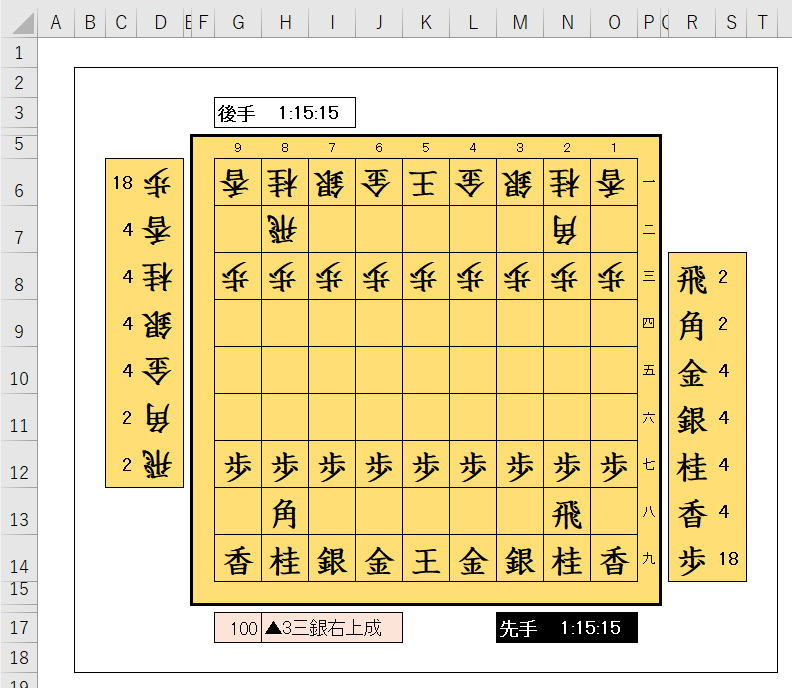

Excel将棋：ひとまず完成、これまでとこれから(№18)

Excelで将棋を作ってみましょう。
人vs人で動かしてゲームとして成立するところまでが当面の目標です。
連載の途中で、急遽棋譜の出力と読み込んで自動再生も作成しました。
これでこの連載はひとまず完了とします。
・連載の目次
・Excel将棋のダウンロード
・当初のクラス設計
・全体構成図
・全プロシージャー・プロパティの一覧
・全VBAコード
これらを掲載しておきます。
Excel将棋のこれから
位置づけとしてはベータ版のようなものです。
不具合もあるしょう。
ここはこうしたほうが良いといった意見も出てくるでしょう。
自分としても、まだまだ組み込みたい機能は沢山ありますが、それはおいおい時間の取れた時にしようと思います。
もし、これを使ってみて、バグ報告・ご要望があれば、
有名な将棋ソフトが思考エンジンのDLLを公開していたりするので、これらが使えるものなの、この辺りの情報次第では考えてみたいと思っています。
Excel将棋の目次
Excel将棋のダウンロード
他のゲーム（数独やオセロ）も含めたダウンロード一覧は以下になります。
当初のクラス設計
あえてその後の修正は反映せず、作成過程の資料として掲載しておきます。
作成するクラスの役割と作成順
主な役割としては、
・シートと他のクラスの受け渡し
・ルール制御
・消費時間管理
・将棋盤オブジェクト
・先手駒台オブジェクト
・後手駒台オブジェクト
2次元配列に駒クラスのオブジェクトを入れる。
シートとは完全に切り離して作成。
駒の種類と数だけ管理できれば良い。
駒の種類、駒の移動、駒の位置等、駒ごとの情報を保持
・行
・列
この情報だけを持たせる
ユーザー定義型では制限が多いためクラスを使用
・行
・列
・回数
この情報だけを持たせる
ユーザー定義型では制限が多いためクラスを使用
前に1つだけ進める場合は、-1,0,1
前に突き当たるまで進めるなら、-1,0,8、盤は9*9なので回数は最大で8
| -1,-1 | -1,0 | -1,1 |
| 0,-1 | 現在 | 0,1 |
| 1,-1 | 1,0 | 1,1 |
・駒台クラス
・将棋盤クラス
・将棋進行クラス
この順で作成していく予定です。
細かい部品から作成していく感じになります。
したがって、下に行くほど設計がずれていく可能性があります。
作成するクラスのメンバー一覧
現時点での予定なので、実装段階で変更は発生すると思います。
※各クラス作成時の変更は、極力このページに反映しておきます。
また、Privateメンバーは適宜作成していきます。
| 種別 | 名称 | 説明 |
| プロパティ | 将棋盤 | シートのRange |
| プロパティ | 先手持駒 | シートのRange |
| プロパティ | 後手持駒 | シートのRange |
| プロパティ | 先手消費時間 | シートのRange |
| プロパティ | 後手消費時間 | シートのRange |
| プロパティ | 手数 | シートのRange |
| プロパティ | 棋譜 | シートのRange |
| プロパティ | 将棋盤色 | シートのRange |
| プロパティ | 駒選択色 | シートのRange |
| メソッド | 駒配置 | 駒を並べる 「大橋流」でアニメーションさせたい |
| メソッド | 駒選択 | 選択駒の移動可能セルの協調表示 既に選択されている場合は解除 |
| メソッド | 着手 | 引数(元位置, 先位置, 駒名) 元位置：-1,-1は初期配置 元位置：0,0は駒台から 反則（禁じ手）等の判定を行い、禁じ手の場合はFalseを返す 相手の駒を取る場合は駒台へ追加 駒台から打った場合は駒台から削除 シート全体の更新 |
| メソッド | 盤面表示 | 盤面の2次元配列をシートに表示する 2次元配列はcls将棋盤の現在盤面で取得する |
| メソッド | 終局判定 | これは結構難しい・・・ 持駒を含めた全ての駒を使って受けがないかの判定 |
| 種別 | 名称 | 説明 |
| プロパティ | 現在盤面 | 駒オブジェクトが入っている2次元配列から表示名の2次元配列を作成する |
| プロパティ | 盤面履歴 | 現在盤面をCollection |
| プロパティ | 手数 | 現在手数を戻す |
| プロパティ | 棋譜 | 1手ずつCollectionに追加 棋譜は、Ki2形式とします。 ▲５ニ銀右上成 ・先手▲後手△ ・到達地点の筋 ・到達地点の段 ・駒の種類 ・駒の相対位置（複数ある場合） ・駒の動作（複数ある場合） ・成・不成・打 |
| プロパティ | 棋譜履歴 | 最終手をCollection |
| プロパティ | 先手 | 先手True、後手False |
| メソッド | 着手 | 引数(元位置, 先位置, 駒名, Optional 手番) 元位置：-1,-1は初期配置 元位置：0,0は駒台から 手番省略時は、プロパティ手番に従う 以下を更新する。 最終手、2次元配列、盤面履歴、棋譜履歴 |
| メソッド | 終局判定 | これはかなり難しい・・・ 持駒を含めた全ての駒を使って受けがないかの判定が必要 |
2次元配列(1 To 9, 1 To 9)の各要素に駒オブジェクト（駒クラスのインスタンス）を入れて管理します。
| 種別 | 名称 | 説明 |
| プロパティ | 駒台一覧 | 金,1;歩,3 |
| メソッド | 駒追加 | オブジェクトで追加 |
| メソッド | 駒削除 | 名称で削除 |
| 種別 | 名称 | 説明 |
| プロパティ | 正式名称 | 飛車、角行、金将、銀将、桂馬、香車、歩兵 |
| プロパティ | 表示名称 | 飛、角、金、銀、桂、香、歩 |
| プロパティ | 成駒名称 | 龍、馬、金、成銀、成桂、成香、と |
| プロパティ | 表示順 | 駒台の表示順 |
| プロパティ | 先手 | 先手True、後手False |
| プロパティ | 成り | 先りTrue、未成りFalse |
| プロパティ | 駒位置 | 縦横（行列）で取得・設定 |
| プロパティ | 駒移動 | 別表参照 |
| プロパティ | 成駒移動 | 別表参照 |
| メソッド | 駒作成 | 駒の正式名称を受け取って、その駒特有の情報を設定する |
| メソッド | ||
| メソッド | 移動可能位置 | 駒が移動できる位置をcls位置（行、列）のCollectionで返す |
| 種別 | 名称 | 説明 |
| 変数 | 行 | 1～9 |
| 変数 | 列 | 1～9 |
将棋では筋、段と言い、筋は右から1,2,…となります。
しかし、ここでは配列の位置としての行・列の数値で管理します。
| 種別 | 名称 | 説明 |
| 変数 | 行 | 1～9 |
| 変数 | 列 | 1～9 |
| 変数 | 回数 | 1～8 |
将棋では筋、段と言い、筋は右から1,2,…となります。
しかし、ここでは配列の位置としての行・列の数値で管理します。
全体構成図

当初はそこまで考えておらず、駒が動かせればよいくらいに考えていました。
しかし、作っていくと、いろいろと欲が出てくるもので、
・棋譜を見やすく表示したい
・棋譜で盤面を戻したい
・棋譜ファイルを出力したい
・棋譜ファイルを読み込みたい
このような欲求が次々に出てきて順次実装していきました。
全プロシージャー・プロパティの一覧
| モジュール | プロシージャー | スコープ | 種別 | 行位置 | ソース | コメント |
| modゲーム開始 | ゲーム開始 | Public | Sub Function | 5 | Sub ゲーム開始() | |
| cls駒 | Class_Initialize | Private | Sub Function | 74 | Private Sub Class_Initialize() | |
| cls駒 | Name | Public | Property Get | 84 | Public Property Get Name() As String | |
| cls駒 | 正式名称 | Public | Property Let | 88 | Public Property Let 正式名称(ByVal Value As String) | |
| cls駒 | 表示名称 | Public | Property Let | 95 | Public Property Let 表示名称(ByVal Value As String) | |
| cls駒 | 通常名称 | Public | Property Get | 101 | Public Property Get 通常名称() As String | |
| cls駒 | 成駒名称 | Public | Property Let | 105 | Public Property Let 成駒名称(ByVal Value As String) | |
| cls駒 | 表示順 | Public | Property Let | 112 | Public Property Let 表示順(ByVal Value As String) | |
| cls駒 | 駒移動 | Public | Property Let | 119 | Public Property Let 駒移動(ByRef arg移動() As cls移動) | |
| cls駒 | 成駒移動 | Public | Property Let | 126 | Public Property Let 成駒移動(ByRef arg移動() As cls移動) | |
| cls駒 | 先手 | Public | Property Let | 133 | Public Property Let 先手(ByVal Value As Boolean) | |
| cls駒 | 成り | Public | Property Let | 140 | Public Property Let 成り(ByVal Value As Boolean) | |
| cls駒 | 駒位置 | Public | Property Set | 147 | Public Property Set 駒位置(ByVal arg駒位置 As g位置) | |
| cls駒 | Clone | Public | Sub Function | 159 | Public Function Clone() As cls駒 | '自身を複製する |
| cls駒 | 駒作成 | Public | Sub Function | 175 | Public Function 駒作成(ByVal arg名称 As String, ByVal arg先手 As Boolean, Optional ByVal arg位置 As g位置 = Nothing ) As cls駒 | '駒の正式名称を受け取って、その駒特有の情報を設定する |
| cls駒 | 駒移動可能位置 | Public | Sub Function | 233 | Public Function 駒移動可能位置(ByRef ary盤面() As cls駒) As Collection | '駒が移動できる位置をg位置（行、列）のCollectionで返す |
| cls駒 | 駒移動設定 | Private | Sub Function | 272 | Private Function 駒移動設定(ByVal arg動き As String) As cls移動() | '駒の動きを定義したConstより配列を作成する |
| cls駒台 | Name | Public | Property Get | 18 | Public Property Get Name() As String | |
| cls駒台 | Parent | Public | Property Set | 22 | Public Property Set Parent(ByVal argParent As Object) | |
| cls駒台 | 手数 | Public | Property Get | 29 | Public Property Get 手数() As Long | |
| cls駒台 | 先手 | Public | Property Get | 33 | Public Property Get 先手() As Boolean | |
| cls駒台 | Class_Initialize | Private | Sub Function | 41 | Private Sub Class_Initialize() | |
| cls駒台 | Class_Terminate | Private | Sub Function | 45 | Private Sub Class_Terminate() | |
| cls駒台 | 駒追加 | Public | Sub Function | 54 | Public Sub 駒追加(ByVal arg駒 As cls駒) | |
| cls駒台 | 駒削除 | Public | Sub Function | 68 | Public Sub 駒削除(ByVal arg駒 As Variant) | |
| cls駒台 | 履歴追加 | Public | Sub Function | 89 | Public Sub 履歴追加() | |
| cls駒台 | 駒台一覧 | Public | Sub Function | 94 | Public Function 駒台一覧(Optional ByVal arg手数 As Long) As String() | |
| cls駒台 | 特定局面再現 | Public | Sub Function | 107 | Public Sub 特定局面再現(ByVal arg手数 As Long) | '静的配列のpAry駒への代入が出来ない為、一つずつ入れています。 |
| cls駒台 | 千日手 | Public | Sub Function | 127 | Public Function 千日手(Optional ByVal arg手数 As Long) As Boolean | '指定手数の位置と同一局面が4回存在していたらTrueを返す |
| cls駒台 | ArrayCompress | Private | Sub Function | 153 | Private Function ArrayCompress(ByRef argAry() As t駒台) As String() | '駒台の配列(1 To 7)の使っていない要素を圧縮します |
| cls駒台 | 盤面履歴手数戻し | Private | Sub Function | 167 | Private Sub 盤面履歴手数戻し() | |
| cls将棋盤 | Name | Public | Property Get | 14 | Public Property Get Name() As String | |
| cls将棋盤 | Parent | Public | Property Set | 18 | Public Property Set Parent(ByVal argParent As Object) | |
| cls将棋盤 | 手数 | Public | Property Get | 25 | Public Property Get 手数() As Long | |
| cls将棋盤 | 先手 | Public | Property Get | 29 | Public Property Get 先手() As Boolean | |
| cls将棋盤 | 現在盤面 | Public | Property Get | 37 | Public Property Get 現在盤面(Optional ByVal arg手数 As Long) As String() | |
| cls将棋盤 | 盤面履歴 | Public | Property Get | 68 | Public Property Get 盤面履歴() As Collection | |
| cls将棋盤 | 棋譜履歴 | Public | Property Get | 72 | Public Property Get 棋譜履歴() As Collection | |
| cls将棋盤 | 棋譜 | Public | Property Get | 76 | Public Property Get 棋譜(Optional ByVal arg手数 As Long) As String | |
| cls将棋盤 | 棋譜最終 | Public | Property Get | 80 | Public Property Get 棋譜最終() As String | |
| cls将棋盤 | 消費時間 | Public | Property Get | 84 | Public Property Get 消費時間(Optional ByVal arg手数 As Long) As String | |
| cls将棋盤 | 開始時刻 | Public | Property Get | 88 | Public Property Get 開始時刻() As Date | |
| cls将棋盤 | 最終時刻 | Public | Property Get | 92 | Public Property Get 最終時刻() As Date | |
| cls将棋盤 | 駒 | Public | Property Set | 96 | Public Property Set 駒(ByVal arg位置 As g位置, ByVal arg駒 As cls駒) | |
| cls将棋盤 | 駒配列 | Public | Property Get | 103 | Public Property Get 駒配列(Optional ByVal arg手数 As Long) As cls駒() | |
| cls将棋盤 | Class_Initialize | Private | Sub Function | 127 | Private Sub Class_Initialize() | |
| cls将棋盤 | Class_Terminate | Private | Sub Function | 133 | Private Sub Class_Terminate() | |
| cls将棋盤 | 駒移動可能位置 | Public | Sub Function | 144 | Public Function 駒移動可能位置(ByVal arg位置 As g位置) As Collection | '駒が移動できる位置をg位置（行、列）のCollectionで返す |
| cls将棋盤 | 着手 | Public | Sub Function | 149 | Public Sub 着手(ByVal arg駒名 As String, ByVal arg元位置 As g位置, ByVal arg先位置 As g位置, ByVal arg先手 As Boolean, Optional ByVal arg成 As Variant, Optional ByVal arg時間1手 As Date, Optional ByVal arg時間累計 As Date) | |
| cls将棋盤 | 特定局面再現 | Public | Sub Function | 201 | Public Sub 特定局面再現(ByVal arg手数 As Long) | '静的配列のpAry駒への代入が出来ない為、一つずつ入れています。 |
| cls将棋盤 | 棋譜終局追加 | Public | Sub Function | 213 | Public Sub 棋譜終局追加(ByVal arg文字 As String) | |
| cls将棋盤 | 千日手 | Public | Sub Function | 218 | Public Function 千日手(ByRef arg千日手開始手数 As Long, Optional ByVal arg手数 As Long) As Boolean | '指定手数の位置と同一局面が4回存在していたらTrueを返す |
| cls将棋盤 | 成り判定 | Private | Sub Function | 245 | Private Function 成り判定(ByRef arg元位置 As g位置, ByVal arg先位置 As g位置, ByRef arg成り As Boolean) As Boolean | |
| cls将棋盤 | 盤面履歴手数戻し | Private | Sub Function | 292 | Private Sub 盤面履歴手数戻し() | |
| g位置 | NewPos | Public | Sub Function | 14 | Function NewPos(Optional ByVal arg行 As Variant, Optional ByVal arg列 As Variant) As g位置 | 'コンストラクタとして使用 |
| cls将棋進行 | Name | Public | Property Get | 49 | Public Property Get Name() As String | |
| cls将棋進行 | Application | Public | Property Get | 53 | Public Property Get Application() As Excel.Application | |
| cls将棋進行 | 手数 | Public | Property Let | 57 | Public Property Let 手数(ByVal Value As Long) | |
| cls将棋進行 | 先手 | Public | Property Get | 64 | Public Property Get 先手() As Boolean | |
| cls将棋進行 | Class_Initialize | Private | Sub Function | 72 | Private Sub Class_Initialize() | |
| cls将棋進行 | Class_Terminate | Private | Sub Function | 84 | Private Sub Class_Terminate() | |
| cls将棋進行 | xlApp_SheetSelectionChange | Private | Sub Function | 92 | Private Sub xlApp_SheetSelectionChange(ByVal Sh As Object, ByVal Target As Range) | 'WithEventsのxlAppのイベント |
| cls将棋進行 | xlApp_SheetBeforeDoubleClick | Private | Sub Function | 116 | Private Sub xlApp_SheetBeforeDoubleClick(ByVal Sh As Object, ByVal Target As Range, Cancel As Boolean) | |
| cls将棋進行 | ゲーム開始 | Public | Sub Function | 124 | Public Function ゲーム開始(Optional ByVal arg手合い As String = "", Optional ByVal arg大橋流 As Boolean = False) As Boolean | |
| cls将棋進行 | ゲーム終了 | Public | Sub Function | 178 | Public Sub ゲーム終了() | |
| cls将棋進行 | 特定局面再現 | Public | Sub Function | 182 | Public Sub 特定局面再現(ByVal arg手数 As Long) | |
| cls将棋進行 | 自動着手 | Public | Sub Function | 192 | Public Sub 自動着手(ByVal arg駒 As String, ByVal arg元位置 As g位置, ByVal arg先位置 As g位置, ByVal arg成 As String, ByVal arg時間1手 As Date, ByVal arg時間累計 As Date, Optional ByVal argWait As Long = 100) | |
| cls将棋進行 | 棋譜位置 | Public | Sub Function | 228 | Public Function 棋譜位置(ByVal arg筋 As Integer, ByVal arg段 As Integer) As g位置 | '棋譜の筋・段を配列の行・列に変換 |
| cls将棋進行 | 配列180度回転 | Public | Sub Function | 234 | Public Function 配列180度回転(ByRef argAry) As Variant | '2次元配列を180度回転させる：実引数はRangeを想定 |
| cls将棋進行 | Join2DimArray | Public | Sub Function | 248 | Public Function Join2DimArray(ByRef argAry() As String) As String | '2次元配列をJOINします |
| cls将棋進行 | CompProperty | Public | Sub Function | 259 | Public Function CompProperty(ByVal argObj As Object, ByVal argProperty As String, ByVal argValue As Variant, Optional ByVal argOperator As String = "=") As Boolean | '棋譜の筋・段を配列の行・列に変換 |
| cls将棋進行 | 駒配置 | Private | Sub Function | 291 | Private Sub 駒配置(ByVal arg手合い As String, ByVal arg大橋流 As Boolean) | '大橋流でゆっくり駒を並べます。 |
| cls将棋進行 | 駒選択将棋盤 | Private | Sub Function | 391 | Private Sub 駒選択将棋盤() | '盤内を選択した時に駒選択と移動可能位置の色設定を行う '移動可能位置をクリックした場合は着手し駒を移動する |
| cls将棋進行 | 駒選択駒台 | Private | Sub Function | 433 | Private Sub 駒選択駒台() | '駒台を選択した時に選択した駒の色を変更 |
| cls将棋進行 | 着手 | Private | Sub Function | 467 | Private Sub 着手(ByVal arg元選択 As Range, ByVal arg先選択 As Range, Optional ByVal arg成 As Variant, Optional ByVal arg時間1手 As Date, Optional ByVal arg時間累計 As Date) | '駒選択後に移動可能位置を選択したら着手します |
| cls将棋進行 | 盤面表示 | Private | Sub Function | 537 | Private Sub 盤面表示(Optional arg手数 As Long) | '盤面配列をシートに表示する |
| cls将棋進行 | 選択解除 | Private | Sub Function | 622 | Private Sub 選択解除() | '前回選択と今回選択を消去して選択状態を解除 |
| cls将棋進行 | 選択セルを手番に移動 | Private | Sub Function | 628 | Private Sub 選択セルを手番に移動() | '次のSheetSelectionChangeが効くように先手後手の位置へ選択セルを移動させる |
| cls将棋進行 | 駒移動可能位置色変更 | Private | Sub Function | 635 | Private Sub 駒移動可能位置色変更(ByVal argCol As Collection) | '駒を選択した時に駒の移動可能位置の色設定を行う |
| cls将棋進行 | 駒移動可能 | Private | Sub Function | 648 | Private Function 駒移動可能(ByVal arg元選択 As Range, ByVal arg先選択 As Range) As Boolean | '駒選択後の次のクリックが移動可能場所かの判定 |
| cls将棋進行 | セル2位置 | Private | Sub Function | 664 | Private Function セル2位置(ByVal argRng As Range) As g位置 | 'セル選択位置を配列の位置に変換 |
| cls将棋進行 | 移動可能範囲 | Private | Sub Function | 672 | Private Function 移動可能範囲(ByVal arg元位置 As g位置, ByVal arg先位置 As g位置) As Boolean | '移動可能範囲を判定してTrue/Falseで返す |
| cls将棋進行 | 選択場所 | Private | Sub Function | 686 | Private Function 選択場所(ByVal argRange As Range) As e場所 | '選択場所をEnumで返す |
| cls将棋進行 | 反則 | Private | Sub Function | 706 | Private Function 反則(ByVal arg元選択 As Range, ByVal arg先選択 As Range) As Boolean | |
| cls将棋進行 | 反則二歩 | Private | Sub Function | 750 | Private Function 反則二歩(ByRef arg駒配列, ByRef arg盤面() As String, ByVal arg元位置 As g位置, ByVal arg先位置 As g位置, ByVal arg駒名 As String, ByVal arg先手 As Boolean, Optional ByVal argMsg As Boolean = True) As Boolean | |
| cls将棋進行 | 反則不動駒 | Private | Sub Function | 771 | Private Function 反則不動駒(ByRef arg駒配列, ByRef arg盤面() As String, ByVal arg元位置 As g位置, ByVal arg先位置 As g位置, ByVal arg駒名 As String, ByVal arg先手 As Boolean, Optional ByVal argMsg As Boolean = True) As Boolean | |
| cls将棋進行 | 反則王手放置 | Private | Sub Function | 799 | Private Function 反則王手放置(ByRef arg駒配列, ByRef arg盤面() As String, ByVal arg元位置 As g位置, ByVal arg先位置 As g位置, ByVal arg駒名 As String, ByVal arg先手 As Boolean) As Boolean | |
| cls将棋進行 | 反則打歩詰め | Private | Sub Function | 816 | Private Function 反則打歩詰め(ByRef arg駒配列, ByRef arg盤面() As String, ByVal arg元位置 As g位置, ByVal arg先位置 As g位置, ByVal arg駒名 As String, ByVal arg先手 As Boolean) As Boolean | |
| cls将棋進行 | 詰み | Private | Sub Function | 838 | Private Function 詰み(ByRef arg駒配列() As cls駒, ByVal arg先手) As Boolean | |
| cls将棋進行 | 詰み駒移動回避 | Private | Sub Function | 859 | Private Function 詰み駒移動回避(ByRef arg駒配列() As cls駒, ByVal arg先手) As Boolean | '盤上の駒（玉を含む）を移動して王手を回避できるか |
| cls将棋進行 | 詰み駒打ち回避 | Private | Sub Function | 887 | Private Function 詰み駒打ち回避(ByRef arg駒配列() As cls駒, ByVal arg先手) As Boolean | '持駒を打つことで王手を回避できるか |
| cls将棋進行 | 着手後盤面 | Private | Sub Function | 938 | Private Function 着手後盤面(ByRef arg駒配列, ByVal arg元位置 As g位置, ByVal arg先位置 As g位置, ByVal arg駒名 As String, ByVal arg先手 As Boolean) As cls駒() | |
| cls将棋進行 | 王手 | Private | Sub Function | 956 | Private Function 王手(ByRef ary駒() As cls駒, ByVal arg先手 As Boolean) As Boolean | 'arg先手=Trueなら先手に王手がかかっているか判定 |
| cls将棋進行 | 千日手 | Private | Sub Function | 983 | Private Function 千日手(ByRef arg千日手開始手数 As Long) As Boolean | |
| cls将棋進行 | 連続王手の千日手 | Private | Sub Function | 993 | Private Function 連続王手の千日手(ByVal arg千日手開始手数 As Long) As String | |
| cls将棋進行 | 新規シート作成 | Private | Sub Function | 1024 | Private Sub 新規シート作成(ByVal ws As Worksheet) | |
| cls将棋進行 | シート消去 | Private | Sub Function | 1034 | Private Sub シート消去() | |
| cls将棋進行 | シート名前定義 | Private | Sub Function | 1048 | Private Sub シート名前定義() | |
| cls将棋進行 | シート書式設定 | Private | Sub Function | 1071 | Private Sub シート書式設定() | |
| Module1 | delBuiltinDocumentProperties | Public | Sub Function | 3 | Sub delBuiltinDocumentProperties() | |
| Module1 | かいとか | Public | Sub Function | 27 | Sub かいとか() | |
| cls棋譜 | Name | Public | Property Get | 16 | Public Property Get Name() As String | |
| cls棋譜 | Parent | Public | Property Set | 20 | Public Property Set Parent(ByVal argParent As Object) | |
| cls棋譜 | 手数 | Public | Property Get | 27 | Public Property Get 手数() As Long | |
| cls棋譜 | 先手 | Public | Property Get | 31 | Public Property Get 先手() As Boolean | |
| cls棋譜 | 棋譜履歴 | Public | Property Get | 39 | Public Property Get 棋譜履歴() As Collection | |
| cls棋譜 | 棋譜 | Public | Property Get | 43 | Public Property Get 棋譜(Optional ByVal arg手数 As Long) As String | |
| cls棋譜 | 棋譜最終 | Public | Property Get | 52 | Public Property Get 棋譜最終() As String | |
| cls棋譜 | 消費時間 | Public | Property Get | 57 | Public Property Get 消費時間(Optional ByVal arg手数 As Long) As String | |
| cls棋譜 | 開始時刻 | Public | Property Get | 67 | Public Property Get 開始時刻() As Date | |
| cls棋譜 | 最終時刻 | Public | Property Get | 71 | Public Property Get 最終時刻() As Date | |
| cls棋譜 | Class_Initialize | Private | Sub Function | 79 | Private Sub Class_Initialize() | |
| cls棋譜 | Class_Terminate | Private | Sub Function | 87 | Private Sub Class_Terminate() | |
| cls棋譜 | 棋譜作成 | Public | Sub Function | 98 | Public Function 棋譜作成(ByVal arg元位置 As g位置, ByVal arg駒先 As cls駒, ByRef arg成り As Boolean, Optional ByVal arg時間1手 As Date, Optional ByVal arg時間累計 As Date) As String | '棋譜はKIF形式で作成 '###1 ５ニ銀成(43) (mm:ss/hh:mm:ss) |
| cls棋譜 | 棋譜終局追加 | Public | Sub Function | 151 | Public Sub 棋譜終局追加(ByVal arg文字 As String) | |
| cls棋譜 | KIF駒名変換 | Private | Sub Function | 161 | Private Function KIF駒名変換(ByVal arg駒先 As cls駒, ByRef arg成り As Boolean) As String | |
| cls棋譜 | 棋譜履歴手数戻し | Private | Sub Function | 179 | Private Sub 棋譜履歴手数戻し() | '棋譜履歴：手数戻しに対応 |
| frm棋譜 | Parent | Public | Property Set | 25 | Public Property Set Parent(ByVal argParent As Object) | |
| frm棋譜 | btn棋譜出力_Click | Private | Sub Function | 37 | Private Sub btn棋譜出力_Click() | '拡張子".kif"のShift-JISで出力 |
| frm棋譜 | btn棋譜読込_Click | Private | Sub Function | 70 | Private Sub btn棋譜読込_Click() | '拡張子".kif"のShift-JISのみ対応 |
| frm棋譜 | KIF棋譜読込 | Public | Sub Function | 88 | Public Function KIF棋譜読込(ByRef aryKif() As String) As Boolean | 'KIF形式ファイルからの棋譜の配列を読み盤面を再現する |
| frm棋譜 | KIF棋譜再現 | Private | Sub Function | 135 | Private Sub KIF棋譜再現(ByRef ary棋譜() As tKif) | |
| frm棋譜 | parseKif | Private | Sub Function | 165 | Private Function parseKif(ByVal argKif As String) As tKif | |
| frm棋譜 | mmss2hhmmss | Private | Sub Function | 212 | Private Function mmss2hhmmss(ByVal mmss As String) As Date | |
| frm棋譜 | readKif | Private | Sub Function | 223 | Private Function readKif(ByVal argFile As String, Optional ByVal CharSet As String = "SHIFT-JIS") As String() | |
| frm棋譜 | readStream | Private | Sub Function | 237 | Private Function readStream(ByVal argFile As String, ByVal CharSet As String) As String | |
| frm棋譜 | ControlsEnable | Private | Sub Function | 249 | Private Sub ControlsEnable(ByVal argEnabled As Boolean) | 'Me.Enabledでは、VBA終了時にフォームが戻らない場合があったので対応 |
| frm棋譜 | UserForm_Initialize | Private | Sub Function | 260 | Private Sub UserForm_Initialize() | |
| frm棋譜 | UserForm_QueryClose | Private | Sub Function | 279 | Private Sub UserForm_QueryClose(Cancel As Integer, CloseMode As Integer) | |
| frm棋譜 | UserForm_Terminate | Private | Sub Function | 286 | Private Sub UserForm_Terminate() | |
| frm棋譜 | btn対局開始_Click | Private | Sub Function | 291 | Private Sub btn対局開始_Click() | |
| frm棋譜 | lst棋譜_Change | Private | Sub Function | 298 | Private Sub lst棋譜_Change() | |
| frm棋譜 | 棋譜追加 | Public | Sub Function | 316 | Public Sub 棋譜追加(ByVal arg棋譜 As String) | |
| frm棋譜 | 棋譜表示 | Public | Sub Function | 328 | Public Sub 棋譜表示(ByVal arg棋譜 As Collection, ByVal arg開始時刻 As Date, ByVal arg最終時刻) | |
| frm棋譜 | 先手後手表示 | Private | Sub Function | 346 | Private Sub 先手後手表示() | |
| frm棋譜 | 親オブジェク喪失 | Private | Sub Function | 350 | Private Function 親オブジェク喪失() As Boolean |
この一覧は以下で紹介しているVBAを使用し自動作成したものです。
全VBAコード
標準モジュール
Option Explicit
Private obj将棋 As cls将棋進行
Sub ゲーム開始()
Set obj将棋 = New cls将棋進行
obj将棋.ゲーム開始
End Sub
obj将棋はモジュールレベル変数にせず、プロシージャーレベルとして、
Dim obj将棋 As cls将棋進行
これをSubの中で定義しても動きます。
この辺りは、使い方次第です。
将棋進行クラスケ：cls将棋進行
Option Explicit
'API
Private Declare PtrSafe Sub Sleep Lib "kernel32" (ByVal dwMilliseconds As Long)
'盤面配色定数：自由に設定可
Private Const cnsFont As String = "AR教科書体M"
Private Const cns将棋盤色 As Long = &H75DEFF 'RGB(255, 222, 117)
Private Const cns駒選択色 As Long = &HD9E4FC 'RGB(252, 228, 217)
'イベント用
Private WithEvents xlApp As Excel.Application
Private RunAuto As Boolean
'Excel将棋の各オブジェクト
Private obj将棋盤 As cls将棋盤
Private obj先手駒台 As cls駒台
Private obj後手駒台 As cls駒台
'シートおよび名前定義の設定
Private pWs As Worksheet
Private pR前回選択 As Range
Private pR今回選択 As Range
Private pR開始位置 As Range
Private pR将棋盤 As Range
Private pR先手持駒 As Range
Private pR後手持駒 As Range
Private pR先手時間 As Range
Private pR後手時間 As Range
Private pR手数 As Range
Private pR棋譜 As Range
Private pR将棋盤色 As Range
Private pR駒選択色 As Range
'手数を管理する：先手後手はこの数値の奇数偶数で判断
Private p手数 As Long
'選択場所の判定
Private Enum e場所
将棋盤
先手持駒
後手持駒
End Enum
'**********************************************************************
' 公開プロパティ
'**********************************************************************
Public Property Get Name() As String
Name = TypeName(Me)
End Property
Public Property Get Application() As Excel.Application
Set Application = xlApp
End Property
Public Property Let 手数(ByVal Value As Long)
p手数 = Value
End Property
Public Property Get 手数() As Long
手数 = p手数
End Property
Public Property Get 先手() As Boolean
先手 = CBool(Me.手数 Mod 2 = 1)
End Property
'**********************************************************************
' イベント
'**********************************************************************
Private Sub Class_Initialize()
Set obj将棋盤 = New cls将棋盤
Set obj先手駒台 = New cls駒台
Set obj後手駒台 = New cls駒台
Set obj将棋盤.Parent = Me
Set obj先手駒台.Parent = Me
Set obj後手駒台.Parent = Me
Me.手数 = 1 '次の手数
End Sub
Private Sub Class_Terminate()
Set xlApp = Nothing
Set obj将棋盤 = Nothing
Set obj先手駒台 = Nothing
Set obj後手駒台 = Nothing
End Sub
'WithEventsのxlAppのイベント
Private Sub xlApp_SheetSelectionChange(ByVal Sh As Object, ByVal Target As Range)
If RunAuto Then Exit Sub
If pR将棋盤 Is Nothing Then Exit Sub
If Not Sh Is pR将棋盤.Worksheet Then Exit Sub
'いったん盤全体と駒台を既定色に
pR将棋盤.Interior.Color = pR将棋盤色.Interior.Color
pR先手持駒.Interior.Color = pR将棋盤色.Interior.Color
pR後手持駒.Interior.Color = pR将棋盤色.Interior.Color
Call 選択セルを手番に移動
Set pR前回選択 = pR今回選択
Set pR今回選択 = Target.Item(1)
Select Case 選択場所(Target.Item(1))
Case e場所.将棋盤
Call 駒選択将棋盤
Case e場所.先手持駒, e場所.後手持駒
Call 駒選択駒台
Case Else
Call 選択解除
End Select
End Sub
Private Sub xlApp_SheetBeforeDoubleClick(ByVal Sh As Object, ByVal Target As Range, Cancel As Boolean)
Cancel = True
End Sub
'**********************************************************************
' 公開メソッド
'**********************************************************************
Public Function ゲーム開始(Optional ByVal arg手合い As String = "", _
Optional ByVal arg大橋流 As Boolean = False) As Boolean
'標準モジュールから呼ばれた場合、フォームが表示されていたらは処理しない
If arg手合い = "" Then
If frm棋譜.Visible Then Exit Function
End If
'シート選択
Dim flgNew As Boolean
On Error Resume Next
Set pR開始位置 = ActiveSheet.Range("開始駒位置")
If Err Then
Err.Clear
Set pR開始位置 = Excel.Application.InputBox( _
prompt:="将棋盤を作成するシートの作成開始左上をクリックしてください。" & vbLf & _
"※シートは全消去されます。", _
Title:="作成シート選択", _
Type:=8)
If Err Then
ゲーム開始 = False
Exit Function
End If
flgNew = True
Else
flgNew = False
End If
On Error GoTo 0
Set pWs = pR開始位置.Worksheet
Set xlApp = pR開始位置.Application
xlApp.GoTo pR開始位置
xlApp.EnableEvents = False
xlApp.Cursor = xlWait
xlApp.ScreenUpdating = False
Call シート名前定義
If flgNew Then Call 新規シート作成(pWs)
Call シート消去
xlApp.ScreenUpdating = True
Call Class_Initialize
Call 駒配置(arg手合い, arg大橋流)
With frm棋譜
If .Visible = False Then .Show vbModeless
Set .Parent = Me
End With
xlApp.Cursor = xlDefault
xlApp.GoTo pR先手時間.Offset(, -1)
xlApp.EnableEvents = True
ゲーム開始 = True
End Function
Public Sub ゲーム終了()
End
End Sub
Public Sub 特定局面再現(ByVal arg手数 As Long)
If arg手数 <= 0 Then Exit Sub
Me.手数 = arg手数 + 1
Call obj将棋盤.特定局面再現(arg手数)
Call obj先手駒台.特定局面再現(arg手数)
Call obj後手駒台.特定局面再現(arg手数)
Call 盤面表示(arg手数)
End Sub
Public Sub 自動着手(ByVal arg駒 As String, _
ByVal arg元位置 As g位置, _
ByVal arg先位置 As g位置, _
ByVal arg成 As String, _
ByVal arg時間1手 As Date, _
ByVal arg時間累計 As Date, _
Optional ByVal argWait As Long = 100)
RunAuto = True
xlApp.Cursor = xlWait
Dim rng元 As Range
Dim rng先 As Range
If arg元位置.行 = 0 Then
If Me.先手 Then
Set rng元 = pR先手持駒.Find(arg駒)
Else
Set rng元 = pR後手持駒.Find(arg駒)
End If
Else
Set rng元 = pR将棋盤.Cells(arg元位置.行, arg元位置.列)
End If
Set rng先 = pR将棋盤.Cells(arg先位置.行, arg先位置.列)
Call 着手(rng元, rng先, arg成, arg時間1手, arg時間累計)
Sleep argWait
xlApp.Cursor = xlDefault
RunAuto = False
End Sub
'**********************************************************************
' 公開メソッド：汎用関数
'**********************************************************************
'棋譜の筋・段を配列の行・列に変換
Public Function 棋譜位置(ByVal arg筋 As Integer, _
ByVal arg段 As Integer) As g位置
Set 棋譜位置 = g位置(arg段, 10 - arg筋)
End Function
'2次元配列を180度回転させる：実引数はRangeを想定
Public Function 配列180度回転(ByRef argAry) As Variant
Dim inAry, outAry
inAry = argAry
ReDim outAry(LBound(inAry, 1) To UBound(inAry, 1), LBound(inAry, 2) To UBound(inAry, 2))
Dim i As Long, j As Long
For i = LBound(inAry, 1) To UBound(inAry, 1)
For j = LBound(inAry, 2) To UBound(inAry, 2)
outAry(UBound(inAry, 1) - i + LBound(inAry, 1), UBound(inAry, 2) - j + LBound(inAry, 2)) = inAry(i, j)
Next
Next
配列180度回転 = outAry
End Function
'2次元配列をJOINします
Public Function Join2DimArray(ByRef argAry() As String) As String
Join2DimArray = ""
Dim i As Long, j As Long
For i = LBound(argAry, 1) To UBound(argAry, 1)
For j = LBound(argAry, 2) To UBound(argAry, 2)
Join2DimArray = Join2DimArray & argAry(i, j)
Next
Next
End Function
'棋譜の筋・段を配列の行・列に変換
Public Function CompProperty(ByVal argObj As Object, _
ByVal argProperty As String, _
ByVal argValue As Variant, _
Optional ByVal argOperator As String = "=") As Boolean
CompProperty = False
If argObj Is Nothing Then Exit Function
Dim v As Variant
v = CallByName(argObj, argProperty, VbGet)
Select Case argOperator
Case "="
If v = argValue Then CompProperty = True
Case ">"
If v > argValue Then CompProperty = True
Case "<"
If v < argValue Then CompProperty = True
Case ">="
If v >= argValue Then CompProperty = True
Case "<="
If v <= argValue Then CompProperty = True
Case "<>"
If v <> argValue Then CompProperty = True
Case "Is"
If v Is argValue Then CompProperty = True
End Select
End Function
'**********************************************************************
' 非公開メソッド：ゲーム開始で駒を並べる
'**********************************************************************
'大橋流でゆっくり駒を並べます。
Private Sub 駒配置(ByVal arg手合い As String, _
ByVal arg大橋流 As Boolean)
'先手後手の定数
Const c先手 As Boolean = True
Const c後手 As Boolean = False
If arg手合い = "" Then Exit Sub
Dim ary駒配置
ary駒配置 = Array( _
Array(5, 9, "玉", c先手), Array(5, 1, "玉", c後手), _
Array(6, 9, "金", c先手), Array(4, 1, "金", c後手), _
Array(4, 9, "金", c先手), Array(6, 1, "金", c後手), _
Array(7, 9, "銀", c先手), Array(3, 1, "銀", c後手), _
Array(3, 9, "銀", c先手), Array(7, 1, "銀", c後手), _
Array(8, 9, "桂", c先手), Array(2, 1, "桂", c後手), _
Array(2, 9, "桂", c先手), Array(8, 1, "桂", c後手), _
Array(9, 9, "香", c先手), Array(1, 1, "香", c後手), _
Array(1, 9, "香", c先手), Array(9, 1, "香", c後手), _
Array(8, 8, "角", c先手), Array(2, 2, "角", c後手), _
Array(2, 8, "飛", c先手), Array(8, 2, "飛", c後手), _
Array(5, 7, "歩", c先手), Array(5, 3, "歩", c後手), _
Array(6, 7, "歩", c先手), Array(4, 3, "歩", c後手), _
Array(4, 7, "歩", c先手), Array(6, 3, "歩", c後手), _
Array(7, 7, "歩", c先手), Array(3, 3, "歩", c後手), _
Array(3, 7, "歩", c先手), Array(7, 3, "歩", c後手), _
Array(8, 7, "歩", c先手), Array(2, 3, "歩", c後手), _
Array(2, 7, "歩", c先手), Array(8, 3, "歩", c後手), _
Array(9, 7, "歩", c先手), Array(1, 3, "歩", c後手), _
Array(1, 7, "歩", c先手), Array(9, 3, "歩", c後手))
Select Case arg手合い
Case "香落ち"
ary駒配置(14)(2) = ""
Case "角落ち"
ary駒配置(18)(2) = ""
Case "飛車落ち"
ary駒配置(20)(2) = ""
Case "飛車香落ち"
ary駒配置(14)(2) = ""
ary駒配置(20)(2) = ""
Case "二枚落ち"
ary駒配置(18)(2) = ""
ary駒配置(20)(2) = ""
Case "四枚落ち"
ary駒配置(14)(2) = ""
ary駒配置(16)(2) = ""
ary駒配置(18)(2) = ""
ary駒配置(20)(2) = ""
Case "六枚落ち"
ary駒配置(10)(2) = ""
ary駒配置(12)(2) = ""
ary駒配置(14)(2) = ""
ary駒配置(16)(2) = ""
ary駒配置(18)(2) = ""
ary駒配置(20)(2) = ""
Case "八枚落ち"
ary駒配置(6)(2) = ""
ary駒配置(8)(2) = ""
ary駒配置(10)(2) = ""
ary駒配置(12)(2) = ""
ary駒配置(14)(2) = ""
ary駒配置(16)(2) = ""
ary駒配置(18)(2) = ""
ary駒配置(20)(2) = ""
Case "十枚落ち"
ary駒配置(2)(2) = ""
ary駒配置(4)(2) = ""
ary駒配置(6)(2) = ""
ary駒配置(8)(2) = ""
ary駒配置(10)(2) = ""
ary駒配置(12)(2) = ""
ary駒配置(14)(2) = ""
ary駒配置(16)(2) = ""
ary駒配置(18)(2) = ""
ary駒配置(20)(2) = ""
End Select
DoEvents
If arg大橋流 Then Sleep 300
Dim i As Long, j As Long
With obj将棋盤
For i = LBound(ary駒配置) To UBound(ary駒配置)
If ary駒配置(i)(2) <> "" Then
.着手 ary駒配置(i)(2), Nothing, 棋譜位置(ary駒配置(i)(0), ary駒配置(i)(1)), ary駒配置(i)(3)
If arg大橋流 Then
Call 盤面表示
Sleep 100
End If
End If
Next
End With
If Not arg大橋流 Then Call 盤面表示
End Sub
'**********************************************************************
' 非公開メソッド：SheetSelectionChangeから直接呼ばれるプロシージャー
'**********************************************************************
'盤内を選択した時に駒選択と移動可能位置の色設定を行う
'移動可能位置をクリックした場合は着手し駒を移動する
Private Sub 駒選択将棋盤()
If pR今回選択 Is Nothing Then: Stop: Exit Sub
'同じ駒を選択したときは解除
If Not pR前回選択 Is Nothing Then
If pR前回選択.Address = pR今回選択.Address Then
Call 選択解除
Exit Sub
End If
End If
'着手して駒を移動、反則（禁じ手）は選択解除する
If Not pR前回選択 Is Nothing Then
If 駒移動可能(pR前回選択, pR今回選択) Then
If Not 反則(pR前回選択, pR今回選択) Then
Call 着手(pR前回選択, pR今回選択)
End If
Call 選択解除
Exit Sub
End If
End If
'最初の選択は手番の駒以外（相手の駒）は選択できない
If pR今回選択.Value <> "" Then
If obj将棋盤.駒(セル2位置(pR今回選択)).先手 <> Me.先手 Then
Call 選択解除
Exit Sub
End If
End If
'駒のない場所の選択は無視
If pR今回選択.Value = "" Then
Call 選択解除
Exit Sub
End If
'選択駒と移動可能位置の色変更
pR今回選択.Interior.Color = pR駒選択色.Interior.Color
Call 駒移動可能位置色変更(obj将棋盤.駒移動可能位置(セル2位置(pR今回選択)))
End Sub
'駒台を選択した時に選択した駒の色を変更
Private Sub 駒選択駒台()
Dim tmp駒台 As cls駒台
Set tmp駒台 = IIf(Me.先手, obj先手駒台, obj後手駒台)
Dim tmp持駒 As Range
Set tmp持駒 = IIf(Me.先手, pR先手持駒, pR後手持駒)
'いったん持駒を既定色に
tmp持駒.Interior.Color = pR将棋盤色.Interior.Color
If pR今回選択 Is Nothing Then: Stop: Exit Sub
'同じ駒を選択したときは解除
If Not pR前回選択 Is Nothing Then
If pR前回選択.Address = pR今回選択.Address Then
Call 選択解除
Exit Sub
End If
End If
'駒のない場所の選択は無視
If pR今回選択.Value = "" Then
Call 選択解除
Exit Sub
End If
'選択駒の色変更
pR今回選択.Interior.Color = pR駒選択色.Interior.Color
End Sub
'**********************************************************************
' 非公開メソッド：着手と場面表示（将棋進行の中核プロシージャー）
'**********************************************************************
'駒選択後に移動可能位置を選択したら着手します
Private Sub 着手(ByVal arg元選択 As Range, _
ByVal arg先選択 As Range, _
Optional ByVal arg成 As Variant, _
Optional ByVal arg時間1手 As Date, _
Optional ByVal arg時間累計 As Date)
'着手してシートを更新
Dim tmp駒台 As cls駒台
Set tmp駒台 = IIf(Me.先手, obj先手駒台, obj後手駒台)
If arg先選択.Value <> "" Then
'駒台へ
Call tmp駒台.駒追加(obj将棋盤.駒(セル2位置(arg先選択)))
'盤から削除
Call obj将棋盤.着手(arg先選択.Value, セル2位置(arg先選択), g位置(0, 0), _
Me.先手, arg成, arg時間1手, arg時間累計)
End If
If 選択場所(arg元選択) = e場所.将棋盤 Then
'盤上で駒移動
Call obj将棋盤.着手(arg元選択.Value, セル2位置(arg元選択), セル2位置(arg先選択), _
Me.先手, arg成, arg時間1手, arg時間累計)
Else
'盤上へ駒を打つ
Call obj将棋盤.着手(arg元選択.Value, g位置(0, 0), セル2位置(arg先選択), _
Me.先手, arg成, arg時間1手, arg時間累計)
'駒台から削除
Call tmp駒台.駒削除(arg元選択.Value)
End If
'駒台の履歴作成
Call obj先手駒台.履歴追加
Call obj後手駒台.履歴追加
'シートの表示
Call 盤面表示
Call 選択セルを手番に移動
Call frm棋譜.棋譜表示(obj将棋盤.棋譜履歴, obj将棋盤.開始時刻, obj将棋盤.最終時刻)
'各種オブジェクトの手数を進める
Me.手数 = Me.手数 + 1
'自動実行時は詰みや千日手は確認不要
If RunAuto Then Exit Sub
'詰んでいたら終局
If 詰み(obj将棋盤.駒配列, Me.先手) Then
Call obj将棋盤.棋譜終局追加("詰み")
Call frm棋譜.棋譜表示(obj将棋盤.棋譜履歴, obj将棋盤.開始時刻, obj将棋盤.最終時刻)
MsgBox "アタタタタタタタ！！" & vbLf & vbLf & _
"お前はもう詰んでいる" & vbLf & vbLf & _
IIf(Me.先手, "後手", "先手") & "の勝ちです。"
End If
'千日手：連続王手の千日手は半策として負けにします。
Dim 千日手開始手数 As Long, 反則勝ち As String
If 千日手(千日手開始手数) Then
反則勝ち = 連続王手の千日手(千日手開始手数)
If 反則勝ち <> "" Then
Call obj将棋盤.棋譜終局追加("連続王手の千日手")
Call frm棋譜.棋譜表示(obj将棋盤.棋譜履歴, obj将棋盤.開始時刻, obj将棋盤.最終時刻)
MsgBox "連続王手の千日手で反則です。" & vbLf & vbLf & _
反則勝ち & "の勝ちです。"
Else
Call obj将棋盤.棋譜終局追加("千日手")
Call frm棋譜.棋譜表示(obj将棋盤.棋譜履歴, obj将棋盤.開始時刻, obj将棋盤.最終時刻)
MsgBox "このままじゃ決着がつかん・・・" & vbLf & vbLf & _
"千日手が成立しました。"
End If
End If
End Sub
'盤面配列をシートに表示する
Private Sub 盤面表示(Optional arg手数 As Long)
xlApp.ScreenUpdating = False
Dim saveCalc As Integer
saveCalc = Application.Calculation
Application.Calculation = xlCalculationManual
Dim ary盤面() As String
ary盤面 = obj将棋盤.現在盤面(arg手数)
'将棋盤
Dim i As Long, j As Long
For i = 1 To 9
For j = 1 To 9
With pR将棋盤(i, j)
If Right(ary盤面(i, j), 1) = "↑" Then
'先手書式
If .Font.Name <> cnsFont Then
.Font.Name = cnsFont
End If
If .Orientation <> xlHorizontal Then
.Orientation = xlHorizontal
End If
ElseIf Right(ary盤面(i, j), 1) = "↓" Then
'後手書式
If .Font.Name <> "@" & cnsFont Then
.Font.Name = "@" & cnsFont
End If
If .Orientation <> xlUpward Then
.Orientation = xlUpward
End If
End If
'表示文字
If .Value <> Trim(Left(ary盤面(i, j), 1)) Then
.Value = Trim(Left(ary盤面(i, j), 1))
End If
'成金
Select Case .Value
Case "龍", "馬", "全", "圭", "杏", "と"
.Font.Color = vbRed
Case Else
If .Font.Color = vbRed Then
.Font.Color = vbBlack
End If
End Select
End With
Next
Next
'先手持駒
pR先手持駒.Value = obj先手駒台.駒台一覧(arg手数)
'後手持駒
pR後手持駒.Value = 配列180度回転(obj後手駒台.駒台一覧(arg手数))
'棋譜・手数表示
Dim rng時間1 As Range, rng時間2 As Range
If obj将棋盤.棋譜 <> "" Then
pR手数.Value = IIf(arg手数 = 0, obj将棋盤.手数, arg手数)
pR棋譜.Value = obj将棋盤.棋譜(arg手数)
'着手した後なので先後が入れかわっている
If Me.先手 Then
Set rng時間1 = pR先手時間
Set rng時間2 = pR後手時間
Else
Set rng時間2 = pR先手時間
Set rng時間1 = pR後手時間
End If
rng時間2.Value = obj将棋盤.消費時間(arg手数)
If obj将棋盤.手数 <= 1 Then
rng時間1.Value = 0
Else
rng時間1.Value = obj将棋盤.消費時間(obj将棋盤.手数 - 1)
End If
End If
Application.Calculation = saveCalc
xlApp.ScreenUpdating = True
DoEvents
End Sub
'**********************************************************************
' 非公開メソッド：シートに関する単一機能のSubプロシージャー
'**********************************************************************
'前回選択と今回選択を消去して選択状態を解除
Private Sub 選択解除()
Set pR前回選択 = Nothing
Set pR今回選択 = Nothing
End Sub
'次のSheetSelectionChangeが効くように先手後手の位置へ選択セルを移動させる
Private Sub 選択セルを手番に移動()
xlApp.EnableEvents = False
xlApp.GoTo IIf(Me.先手, pR先手時間.Offset(, -1), pR後手時間.Offset(, -1))
xlApp.EnableEvents = True
End Sub
'駒を選択した時に駒の移動可能位置の色設定を行う
Private Sub 駒移動可能位置色変更(ByVal argCol As Collection)
If argCol Is Nothing Then Exit Sub
Dim tmp位置 As g位置
For Each tmp位置 In argCol
pR将棋盤.Resize(1, 1).Offset(tmp位置.行 - 1, tmp位置.列 - 1).Interior.Color = pR駒選択色.Interior.Color
Next
End Sub
'**********************************************************************
' 非公開メソッド：汎用関数（引数はRange、配列、g位置）
'**********************************************************************
'駒選択後の次のクリックが移動可能場所かの判定
Private Function 駒移動可能(ByVal arg元選択 As Range, _
ByVal arg先選択 As Range) As Boolean
駒移動可能 = False
Dim flg移動 As Boolean: flg移動 = False
If 選択場所(arg先選択) = e場所.将棋盤 Then
If 選択場所(arg元選択) = e場所.将棋盤 Then
駒移動可能 = 移動可能範囲(セル2位置(arg元選択), セル2位置(arg先選択))
Else
If arg先選択.Value = "" Then
駒移動可能 = True
End If
End If
End If
End Function
'セル選択位置を配列の位置に変換
Private Function セル2位置(ByVal argRng As Range) As g位置
Dim r As Long, c As Long
r = argRng.Row - pR将棋盤.Row + 1
c = argRng.Column - pR将棋盤.Column + 1
Set セル2位置 = g位置(r, c)
End Function
'移動可能範囲を判定してTrue/Falseで返す
Private Function 移動可能範囲(ByVal arg元位置 As g位置, _
ByVal arg先位置 As g位置) As Boolean
Dim tmp可能位置 As g位置
For Each tmp可能位置 In obj将棋盤.駒移動可能位置(arg元位置)
If tmp可能位置.行 = arg先位置.行 And _
tmp可能位置.列 = arg先位置.列 Then
移動可能範囲 = True
Exit Function
End If
Next
移動可能範囲 = False
End Function
'選択場所をEnumで返す
Private Function 選択場所(ByVal argRange As Range) As e場所
選択場所 = -1
Select Case False
Case Intersect(pR将棋盤, argRange) Is Nothing
選択場所 = e場所.将棋盤
Case Intersect(pR先手持駒.Resize(, 1), argRange) Is Nothing
If Me.先手 Then
選択場所 = e場所.先手持駒
End If
Case Intersect(pR後手持駒.Offset(, 1).Resize(, 1), argRange) Is Nothing
If Not Me.先手 Then
選択場所 = e場所.後手持駒
End If
End Select
End Function
'**********************************************************************
' 反則（禁じ手）の判定：連続王手の千日手は別途
'**********************************************************************
Private Function 反則(ByVal arg元選択 As Range, _
ByVal arg先選択 As Range) As Boolean
反則 = True
If RunAuto Then Exit Function
Dim ary駒配列() As cls駒
Dim ary盤面() As String
Dim tmp駒名 As String
Dim tmp元位置 As g位置
Dim tmp先位置 As g位置
'個別反則判定プロシージャーへ引き渡す情報を作成
ary駒配列 = obj将棋盤.駒配列(Me.手数 - 1)
ary盤面 = obj将棋盤.現在盤面(Me.手数 - 1)
tmp駒名 = arg元選択.Value
Set tmp元位置 = セル2位置(arg元選択)
Set tmp先位置 = セル2位置(arg先選択)
If 選択場所(arg元選択) = e場所.先手持駒 Or 選択場所(arg元選択) = e場所.後手持駒 Then
Set tmp元位置 = g位置(0, 0)
End If
'3.二歩：歩を打つ時に同列にすでに歩が存在する場合
If 反則二歩(ary駒配列, ary盤面, tmp元位置, tmp先位置, tmp駒名, Me.先手) Then
Exit Function 'Trueが反則
End If
'4.身動きの取れない駒を打つ：香と歩は1段、桂は2段に打てない：Trueが反則
If 反則不動駒(ary駒配列, ary盤面, tmp元位置, tmp先位置, tmp駒名, Me.先手) Then
Exit Function 'Trueが反則
End If
'5.王手放置：王将が取られる状態を回避しない場合：Trueが反則
If 反則王手放置(ary駒配列, ary盤面, tmp元位置, tmp先位置, tmp駒名, Me.先手) Then
Exit Function 'Trueが反則
End If
'6.打ち歩詰め打ち歩詰め
If 反則打歩詰め(ary駒配列, ary盤面, tmp元位置, tmp先位置, tmp駒名, Me.先手) Then
Exit Function 'Trueが反則
End If
反則 = False
End Function
Private Function 反則二歩(ByRef arg駒配列, _
ByRef arg盤面() As String, _
ByVal arg元位置 As g位置, _
ByVal arg先位置 As g位置, _
ByVal arg駒名 As String, _
ByVal arg先手 As Boolean, _
Optional ByVal argMsg As Boolean = True) As Boolean
反則二歩 = False
If arg元位置.行 <> 0 Then Exit Function
If arg駒名 <> "歩" Then Exit Function
Dim i As Long
For i = LBound(arg盤面, 2) To UBound(arg盤面)
If arg盤面(i, arg先位置.列) = "歩" & IIf(arg先手, "↑", "↓") Then
If argMsg Then MsgBox "二歩はダメ！"
反則二歩 = True 'Trueが反則
Exit Function
End If
Next
End Function
Private Function 反則不動駒(ByRef arg駒配列, _
ByRef arg盤面() As String, _
ByVal arg元位置 As g位置, _
ByVal arg先位置 As g位置, _
ByVal arg駒名 As String, _
ByVal arg先手 As Boolean, _
Optional ByVal argMsg As Boolean = True) As Boolean
反則不動駒 = False
If arg元位置.行 <> 0 Then Exit Function
Select Case arg駒名
Case "歩", "香"
If (arg先手 And arg先位置.行 = 1) Or _
(Not arg先手 And arg先位置.行 = 9) Then
If argMsg Then MsgBox "「" & arg駒名 & "」はそこには打てないよ！"
反則不動駒 = True 'Trueが反則
Exit Function
End If
Case "桂"
If (arg先手 And arg先位置.行 <= 2) Or _
(Not arg先手 And arg先位置.行 >= 8) Then
If argMsg Then MsgBox "「" & arg駒名 & "」はそこには打てないよ！"
反則不動駒 = True 'Trueが反則
Exit Function
End If
End Select
End Function
Private Function 反則王手放置(ByRef arg駒配列, _
ByRef arg盤面() As String, _
ByVal arg元位置 As g位置, _
ByVal arg先位置 As g位置, _
ByVal arg駒名 As String, _
ByVal arg先手 As Boolean) As Boolean
反則王手放置 = False
Dim ary駒() As cls駒
ary駒 = 着手後盤面(arg駒配列, arg元位置, arg先位置, arg駒名, arg先手)
If 王手(ary駒, arg先手) Then
MsgBox "王手は放置しないでね！"
反則王手放置 = True 'Trueが反則
Exit Function
End If
End Function
Private Function 反則打歩詰め(ByRef arg駒配列, _
ByRef arg盤面() As String, _
ByVal arg元位置 As g位置, _
ByVal arg先位置 As g位置, _
ByVal arg駒名 As String, _
ByVal arg先手 As Boolean) As Boolean
反則打歩詰め = False
If arg駒名 <> "歩" Or arg元位置.行 <> 0 Then Exit Function
Dim ary駒() As cls駒
ary駒 = 着手後盤面(arg駒配列, arg元位置, arg先位置, arg駒名, arg先手)
If 詰み(ary駒, Not arg先手) Then
MsgBox "打ち歩詰めといって禁じ手だよ！"
反則打歩詰め = True 'Trueが反則
Exit Function
End If
End Function
'**********************************************************************
' 詰みの判定：現在局面以外でも判定できるように駒配列を受け取る
'**********************************************************************
Private Function 詰み(ByRef arg駒配列() As cls駒, _
ByVal arg先手) As Boolean
詰み = False
If RunAuto Then Exit Function
If Not 王手(arg駒配列, arg先手) Then Exit Function
'盤上のどの駒をどこに動かしても王手のまま
If 詰み駒移動回避(arg駒配列, arg先手) Then
Exit Function '詰み回避可能
End If
'持駒のどの駒をどこに打っても王手のまま
If 詰み駒打ち回避(arg駒配列, arg先手) Then
Exit Function '詰み回避可能
End If
詰み = True
End Function
'盤上の駒（玉を含む）を移動して王手を回避できるか
Private Function 詰み駒移動回避(ByRef arg駒配列() As cls駒, _
ByVal arg先手) As Boolean
詰み駒移動回避 = True 'Trueが詰み回避可能
Dim ary次局面() As cls駒
Dim tmp次位置 As g位置
Dim i As Long, j As Long
'盤上のどの駒をどこに動かしても王手のまま
For i = 1 To 9: For j = 1 To 9
If CompProperty(arg駒配列(i, j), "先手", arg先手) Then
For Each tmp次位置 In arg駒配列(i, j).駒移動可能位置(arg駒配列)
ary次局面 = 着手後盤面(arg駒配列, _
arg駒配列(i, j).駒位置, _
tmp次位置, _
arg駒配列(i, j).表示名称, _
arg先手)
If Not 王手(ary次局面, arg先手) Then
Exit Function '詰み回避可能
End If
Next
End If
Next: Next
詰み駒移動回避 = False
End Function
'持駒を打つことで王手を回避できるか
Private Function 詰み駒打ち回避(ByRef arg駒配列() As cls駒, _
ByVal arg先手) As Boolean
詰み駒打ち回避 = True 'Trueが詰み回避可能
Dim ary駒台() As String
If arg先手 Then
ary駒台 = obj先手駒台.駒台一覧(Me.手数 - 1)
Else
ary駒台 = obj後手駒台.駒台一覧(Me.手数 - 1)
End If
Dim ary盤面() As String
ary盤面 = obj将棋盤.現在盤面(Me.手数 - 1)
Dim ary次局面() As cls駒
Dim tmp次位置 As g位置
Dim i As Long, j As Long, k As Long
Dim flg禁じ手 As Boolean
'持駒のどの駒をどこに打っても王手のまま
For k = 1 To 7
If ary駒台(k, 2) <> "" Then
For i = 1 To 9: For j = 1 To 9
If arg駒配列(i, j) Is Nothing Then
ary次局面 = 着手後盤面(arg駒配列, _
g位置(0, 0), _
g位置(i, j), _
ary駒台(k, 1), _
arg先手)
flg禁じ手 = False
flg禁じ手 = 反則二歩(arg駒配列, ary盤面, g位置(0, 0), g位置(i, j), ary駒台(k, 1), arg先手, False)
If Not flg禁じ手 Then
flg禁じ手 = 反則不動駒(arg駒配列, ary盤面, g位置(0, 0), g位置(i, j), ary駒台(k, 1), arg先手, False)
End If
If Not flg禁じ手 Then
If Not 王手(ary次局面, arg先手) Then
Exit Function '詰み回避可能
End If
End If
End If
Next: Next
End If
Next
詰み駒打ち回避 = False
End Function
'**********************************************************************
' 反則・詰みで使う共通関数
'**********************************************************************
Private Function 着手後盤面(ByRef arg駒配列, _
ByVal arg元位置 As g位置, _
ByVal arg先位置 As g位置, _
ByVal arg駒名 As String, _
ByVal arg先手 As Boolean) As cls駒()
Dim ary駒配列() As cls駒
ary駒配列 = arg駒配列
Dim obj駒 As New cls駒
Set ary駒配列(arg先位置.行, arg先位置.列) = obj駒.駒作成(arg駒名, arg先手, arg先位置)
If arg元位置.行 <> 0 Then
Set ary駒配列(arg元位置.行, arg元位置.列) = Nothing
End If
着手後盤面 = ary駒配列
End Function
'arg先手=Trueなら先手に王手がかかっているか判定
Private Function 王手(ByRef ary駒() As cls駒, _
ByVal arg先手 As Boolean) As Boolean
王手 = True
Dim tmp位置 As g位置
Dim tmp駒 As cls駒
Dim i As Long, j As Long
For i = 1 To 9: For j = 1 To 9
If CompProperty(ary駒(i, j), "先手", arg先手, "<>") Then
For Each tmp位置 In ary駒(i, j).駒移動可能位置(ary駒)
Set tmp駒 = ary駒(tmp位置.行, tmp位置.列)
If CompProperty(tmp駒, "表示名称", "玉") And _
CompProperty(tmp駒, "先手", arg先手) Then
Exit Function
End If
Next
End If
Next: Next
王手 = False
End Function
'**********************************************************************
' 千日手：連続王手の千日手は着手不可にせずに負けにします
'**********************************************************************
Private Function 千日手(ByRef arg千日手開始手数 As Long) As Boolean
If obj将棋盤.千日手(arg千日手開始手数) And _
obj先手駒台.千日手() And _
obj後手駒台.千日手() Then
千日手 = True
Else
千日手 = False
End If
End Function
Private Function 連続王手の千日手(ByVal arg千日手開始手数 As Long) As String
Dim i As Long
Dim flg1 As Boolean: flg1 = True
For i = arg千日手開始手数 To Me.手数 - 1 Step 2
If Not 王手(obj将棋盤.駒配列(i), CBool(i Mod 2 = 0)) Then
flg1 = False
Exit For
End If
Next
Dim flg2 As Boolean: flg2 = True
For i = arg千日手開始手数 + 1 To Me.手数 - 1 Step 2
If Not 王手(obj将棋盤.駒配列(i), CBool(i Mod 2 = 0)) Then
flg2 = False
End If
Next
連続王手の千日手 = ""
If flg1 Then
連続王手の千日手 = IIf((Me.手数 - 1) Mod 2 = 1, "後手", "先手")
End If
If flg2 Then
連続王手の千日手 = IIf((Me.手数 - 2) Mod 2 = 1, "後手", "先手")
End If
End Function
'**********************************************************************
' 非公開メソッド：シート設定（名前定義と書式設定）
'**********************************************************************
Private Sub 新規シート作成(ByVal ws As Worksheet)
pWs.Cells.Clear
ActiveWindow.DisplayGridlines = False
ActiveWindow.Zoom = 100
ws.Cells.Locked = True
ws.Protect UserInterfaceOnly:=True
pWs.Names.Add Name:="開始駒位置", RefersToLocal:=pR開始位置
Call シート書式設定
End Sub
Private Sub シート消去()
pR将棋盤.ClearContents
pR先手持駒.ClearContents
pR後手持駒.ClearContents
pR先手時間.ClearContents
pR後手時間.ClearContents
pR手数.ClearContents
pR棋譜.ClearContents
pR将棋盤.Interior.Color = cns将棋盤色
pR将棋盤.Font.Color = vbBlack
pR先手持駒.Interior.Color = cns将棋盤色
pR後手持駒.Interior.Color = cns将棋盤色
End Sub
Private Sub シート名前定義()
With pWs
.Names.Add Name:="将棋盤", RefersToLocal:=pR開始位置.Offset(4, 5).Resize(9, 9)
.Names.Add Name:="先手持駒", RefersToLocal:=pR開始位置.Offset(6, 16).Resize(7, 2)
.Names.Add Name:="先手時間", RefersToLocal:=pR開始位置.Offset(15, 12).Resize(1, 2)
.Names.Add Name:="後手持駒", RefersToLocal:=pR開始位置.Offset(4, 1).Resize(7, 2)
.Names.Add Name:="後手時間", RefersToLocal:=pR開始位置.Offset(1, 6).Resize(1, 2)
.Names.Add Name:="手数", RefersToLocal:=pR開始位置.Offset(15, 5)
.Names.Add Name:="棋譜", RefersToLocal:=pR開始位置.Offset(15, 6).Resize(1, 3)
.Names.Add Name:="将棋盤色", RefersToLocal:=pR開始位置.Offset(0, 18)
.Names.Add Name:="駒選択色", RefersToLocal:=pR開始位置.Offset(1, 18)
Set pR将棋盤 = .Range("将棋盤")
Set pR先手持駒 = .Range("先手持駒")
Set pR先手時間 = .Range("先手時間")
Set pR後手持駒 = .Range("後手持駒")
Set pR後手時間 = .Range("後手時間")
Set pR手数 = .Range("手数")
Set pR棋譜 = .Range("棋譜")
Set pR将棋盤色 = .Range("将棋盤色")
Set pR駒選択色 = .Range("駒選択色")
End With
End Sub
Private Sub シート書式設定()
'列幅行高設定()
With pR開始位置.EntireColumn
.Offset(, 0).ColumnWidth = 2.4
.Offset(, 1).ColumnWidth = 2.4
.Offset(, 2).ColumnWidth = 4
.Offset(, 3).ColumnWidth = 0.47
.Offset(, 4).ColumnWidth = 1.6
.Offset(, 5).Resize(, 9).ColumnWidth = 4
.Offset(, 14).ColumnWidth = 1.6
.Offset(, 15).ColumnWidth = 0.47
.Offset(, 16).ColumnWidth = 4
.Offset(, 17).ColumnWidth = 2.4
.Offset(, 18).ColumnWidth = 2.4
End With
With pR開始位置.EntireRow
.Offset(0).Resize(17).RowHeight = 18
.Offset(2).RowHeight = 4.8
.Offset(3).RowHeight = 13.8
.Offset(4).Resize(9).RowHeight = 28.2
.Offset(13).RowHeight = 13.8
.Offset(14).RowHeight = 4.8
End With
'セル結合設定()
With pWs
.Range("後手時間").Merge
.Range("先手時間").Merge
.Range("棋譜").Merge
End With
'セル書式設定()
With pR将棋盤色
.Interior.Color = cns将棋盤色
.BorderAround LineStyle:=xlContinuous
End With
With pR駒選択色
.Interior.Color = cns駒選択色
.BorderAround LineStyle:=xlContinuous
End With
With pR開始位置
.Resize(17, 19).BorderAround LineStyle:=xlContinuous
End With
With pR将棋盤
.Offset(-1, -1).Resize(11, 11).BorderAround LineStyle:=xlContinuous, Weight:=xlThick
.Offset(-1, -1).Resize(11, 11).Interior.Color = pR将棋盤色.Interior.Color
.Borders.LineStyle = xlContinuous
.Font.Name = cnsFont
.Font.Size = 20
.Font.Bold = True
.HorizontalAlignment = xlCenter
.Resize(3).Font.Name = "@" & cnsFont '後手陣のみ
.Resize(3).Orientation = xlUpward '後手陣のみ
.Offset(-1).Resize(1).Font.Name = "ＭＳ Ｐゴシック"
.Offset(-1).Resize(1).Font.Size = 8
.Offset(-1).Resize(1).HorizontalAlignment = xlCenter
.Offset(-1).Resize(1).VerticalAlignment = xlCenter
.Offset(, 9).Resize(, 1).Font.Name = "ＭＳ Ｐゴシック"
.Offset(, 9).Resize(, 1).Font.Size = 8
.Offset(, 9).Resize(, 1).HorizontalAlignment = xlCenter
.Offset(, 9).Resize(, 1).VerticalAlignment = xlCenter
End With
With pR先手持駒
.BorderAround LineStyle:=xlContinuous
.Interior.Color = pR将棋盤色.Interior.Color
.Offset(, 0).Resize(, 1).Font.Name = cnsFont
.Offset(, 0).Resize(, 1).Font.Size = 20
.Offset(, 0).Resize(, 1).Font.Bold = True
.Offset(, 0).Resize(, 1).HorizontalAlignment = xlCenter
.Offset(, 1).Resize(, 1).Font.Name = "ＭＳ Ｐゴシック"
.Offset(, 1).Resize(, 1).Font.Size = 11
.Offset(, 1).Resize(, 1).Font.Bold = True
.Offset(, 1).Resize(, 1).HorizontalAlignment = xlLeft
End With
With pR後手持駒
.BorderAround LineStyle:=xlContinuous
.Interior.Color = pR将棋盤色.Interior.Color
.Offset(, 1).Resize(, 1).Font.Name = "@" & cnsFont
.Offset(, 1).Resize(, 1).Orientation = xlUpward
.Offset(, 1).Resize(, 1).Font.Size = 20
.Offset(, 1).Resize(, 1).Font.Bold = True
.Offset(, 1).Resize(, 1).HorizontalAlignment = xlCenter
.Offset(, 0).Resize(, 1).Font.Name = "ＭＳ Ｐゴシック"
.Offset(, 0).Resize(, 1).Font.Size = 11
.Offset(, 0).Resize(, 1).Font.Bold = True
.Offset(, 0).Resize(, 1).HorizontalAlignment = xlRight
End With
With pR先手時間
.Offset(, -1).Resize(, 3).BorderAround LineStyle:=xlContinuous
.Offset(, -1).Resize(, 3).Interior.Color = vbBlack
.Offset(, -1).Resize(, 3).Font.Name = "ＭＳ Ｐゴシック"
.Offset(, -1).Resize(, 3).Font.Size = 11
.Offset(, -1).Resize(, 3).Font.Bold = True
.Offset(, -1).Resize(, 3).Font.Color = vbWhite
.HorizontalAlignment = xlCenter
.NumberFormatLocal = "h:mm:ss"
End With
With pR後手時間
.Offset(, -1).Resize(, 3).BorderAround LineStyle:=xlContinuous
.Offset(, -1).Resize(, 3).Interior.Color = vbWhite
.Offset(, -1).Resize(, 3).Font.Name = "ＭＳ Ｐゴシック"
.Offset(, -1).Resize(, 3).Font.Size = 11
.Offset(, -1).Resize(, 3).Font.Bold = True
.HorizontalAlignment = xlCenter
.NumberFormatLocal = "h:mm:ss"
End With
With pR手数
.Resize(, 4).Borders.LineStyle = xlContinuous
.Resize(, 4).Interior.Color = pR駒選択色.Interior.Color
.Resize(, 4).Font.Name = "ＭＳ Ｐゴシック"
.Resize(, 4).Font.Size = 11
.Resize(, 4).Font.Bold = True
End With
'文字設定()
pR将棋盤.Offset(-1).Resize(1).Value = Array(9, 8, 7, 6, 5, 4, 3, 2, 1)
pR将棋盤.Offset(, 9).Resize(, 1).Value = WorksheetFunction.Transpose(Array("一", "二", "三", "四", "五", "六", "七", "八", "九"))
pR先手時間.Offset(, -1).Resize(, 1).Value = "先手"
pR後手時間.Offset(, -1).Resize(, 1).Value = "後手"
pR将棋盤色.Offset(, -2).Value = "将棋盤色"
pR駒選択色.Offset(, -2).Value = "駒選択色"
End Sub
将棋盤クラス：cls将棋盤
Option Explicit
Private pParent As Object
Private obj棋譜 As cls棋譜
Private pAry駒(1 To 9, 1 To 9) As cls駒
Private pCol盤面 As Collection
Private p手数 As Long
'**********************************************************************
' 共通プロパティ：cls将棋盤、cls駒台、cls棋譜
'**********************************************************************
Public Property Get Name() As String
Name = TypeName(Me)
End Property
Public Property Set Parent(ByVal argParent As Object)
Set pParent = argParent
End Property
Public Property Get Parent() As Object
Set Parent = pParent
End Property
Public Property Get 手数() As Long
手数 = Me.Parent.手数
End Property
Public Property Get 先手() As Boolean
先手 = Me.Parent.先手
End Property
'**********************************************************************
' 公開プロパティ
'**********************************************************************
Public Property Get 現在盤面(Optional ByVal arg手数 As Long) As String()
If arg手数 = 0 Then
arg手数 = pCol盤面.Count
End If
Dim ary盤面 As Variant
If pCol盤面.Count = 0 Then
ary盤面 = pAry駒
Else
ary盤面 = pCol盤面(arg手数)
End If
Dim out盤面() As String
ReDim out盤面(LBound(ary盤面, 1) To UBound(ary盤面, 1), _
LBound(ary盤面, 2) To UBound(ary盤面, 2))
Dim i As Long, j As Long
For i = LBound(ary盤面, 1) To UBound(ary盤面, 1)
For j = LBound(ary盤面, 2) To UBound(ary盤面, 2)
If ary盤面(i, j) Is Nothing Then
out盤面(i, j) = " "
Else
out盤面(i, j) = ary盤面(i, j).表示名称 & _
IIf(ary盤面(i, j).先手, "↑", "↓")
End If
Next
Next
現在盤面 = out盤面
End Property
Public Property Get 盤面履歴() As Collection
Set 盤面履歴 = pCol盤面
End Property
Public Property Get 棋譜履歴() As Collection
Set 棋譜履歴 = obj棋譜.棋譜履歴
End Property
Public Property Get 棋譜(Optional ByVal arg手数 As Long) As String
棋譜 = obj棋譜.棋譜(arg手数)
End Property
Public Property Get 棋譜最終() As String
棋譜最終 = obj棋譜.棋譜最終
End Property
Public Property Get 消費時間(Optional ByVal arg手数 As Long) As String
消費時間 = obj棋譜.消費時間(arg手数)
End Property
Public Property Get 開始時刻() As Date
開始時刻 = obj棋譜.開始時刻
End Property
Public Property Get 最終時刻() As Date
最終時刻 = obj棋譜.最終時刻
End Property
Public Property Set 駒(ByVal arg位置 As g位置, ByVal arg駒 As cls駒)
Set pAry駒(arg位置.行, arg位置.列) = arg駒
End Property
Public Property Get 駒(ByVal arg位置 As g位置) As cls駒
Set 駒 = pAry駒(arg位置.行, arg位置.列)
End Property
Public Property Get 駒配列(Optional ByVal arg手数 As Long) As cls駒()
Dim tmp駒() As cls駒
If arg手数 = 0 Then
tmp駒 = pAry駒
Else
tmp駒 = pCol盤面(arg手数)
End If
Dim ary駒(1 To 9, 1 To 9) As cls駒
Dim i As Long, j As Long
For i = 1 To 9
For j = 1 To 9
If Not tmp駒(i, j) Is Nothing Then
Set ary駒(i, j) = tmp駒(i, j).Clone
End If
Next
Next
駒配列 = ary駒
End Property
'**********************************************************************
' イベント
'**********************************************************************
Private Sub Class_Initialize()
Set pCol盤面 = New Collection
Set obj棋譜 = New cls棋譜
Set obj棋譜.Parent = Me
End Sub
Private Sub Class_Terminate()
Set pParent = Nothing
Set pCol盤面 = Nothing
Set obj棋譜 = Nothing
End Sub
'**********************************************************************
' 公開メソッド
'**********************************************************************
'駒が移動できる位置をg位置（行、列）のCollectionで返す
Public Function 駒移動可能位置(ByVal arg位置 As g位置) As Collection
If Me.駒(arg位置) Is Nothing Then Exit Function
Set 駒移動可能位置 = Me.駒(arg位置).駒移動可能位置(pAry駒)
End Function
Public Sub 着手(ByVal arg駒名 As String, _
ByVal arg元位置 As g位置, _
ByVal arg先位置 As g位置, _
ByVal arg先手 As Boolean, _
Optional ByVal arg成 As Variant, _
Optional ByVal arg時間1手 As Date, _
Optional ByVal arg時間累計 As Date)
'元位置：-1,-1は初期配置
'位置：0,0は駒台の出し入れ
Dim obj駒 As cls駒
Dim is成り As Boolean
Select Case True
Case arg元位置 Is Nothing '初期配置
Set obj駒 = New cls駒
Set Me.駒(arg先位置) = obj駒.駒作成(arg駒名, arg先手, arg先位置)
'棋譜は不要
Exit Sub
Case arg先位置.行 = 0 '駒台へ
Set Me.駒(arg元位置) = Nothing
'棋譜は不要
Exit Sub
Case arg元位置.行 = 0 '駒台から
Set obj駒 = New cls駒
Set Me.駒(arg先位置) = obj駒.駒作成(arg駒名, arg先手, arg先位置)
Case Else '駒移動
Set Me.駒(arg先位置) = Me.駒(arg元位置).Clone
Set Me.駒(arg先位置).駒位置 = arg先位置
'「is成り」はByRefで今回成ったかの情報が戻される
If IsEmpty(arg成) Or IsMissing(arg成) Then
Me.駒(arg先位置).成り = 成り判定(arg元位置, arg先位置, is成り)
ElseIf arg成 = "成" Then
Me.駒(arg先位置).成り = True
is成り = True
End If
Set Me.駒(arg元位置) = Nothing
End Select
'棋譜履歴
If arg元位置.行 = 0 Then
Call obj棋譜.棋譜作成(g位置(0, 0), Me.駒(arg先位置), False, _
arg時間1手, arg時間累計)
Else
Call obj棋譜.棋譜作成(arg元位置, Me.駒(arg先位置), is成り, _
arg時間1手, arg時間累計)
End If
'盤面履歴
Call 盤面履歴手数戻し '手数のカウントアップ
pCol盤面.Add pAry駒
End Sub
'静的配列のpAry駒への代入が出来ない為、一つずつ入れています。
Public Sub 特定局面再現(ByVal arg手数 As Long)
Dim ary駒() As cls駒
ary駒 = Me.盤面履歴(arg手数)
Dim i As Long, j As Long
For i = 1 To 9
For j = 1 To 9
Set pAry駒(i, j) = ary駒(i, j)
Next
Next
End Sub
Public Sub 棋譜終局追加(ByVal arg文字 As String)
Call obj棋譜.棋譜終局追加(arg文字)
End Sub
'指定手数の位置と同一局面が4回存在していたらTrueを返す
Public Function 千日手(ByRef arg千日手開始手数 As Long, _
Optional ByVal arg手数 As Long) As Boolean
If arg手数 = 0 Then arg手数 = pCol盤面.Count
If arg手数 < 10 Then Exit Function '千日手にはなりえないので
Dim str盤面 As Variant
str盤面 = Me.Parent.Join2DimArray(Me.現在盤面(arg手数))
Dim cnt As Long, i As Long
For i = arg手数 - 4 To 1 Step -1
If Me.Parent.Join2DimArray(Me.現在盤面(i)) = str盤面 Then
cnt = cnt + 1
If cnt >= 3 Then
arg千日手開始手数 = i
千日手 = True
Exit Function
End If
End If
Next
千日手 = False
End Function
'**********************************************************************
' 非公開メソッド
'**********************************************************************
Private Function 成り判定(ByRef arg元位置 As g位置, _
ByVal arg先位置 As g位置, _
ByRef arg成り As Boolean) As Boolean
arg成り = False
成り判定 = Me.駒(arg元位置).成り
'成れない駒
If Me.駒(arg元位置).成駒名称 = " " Then Exit Function
'既に成っている駒
If 成り判定 Then Exit Function
'敵陣に入った場合、敵陣内で動いた場合、敵陣から外に出た場合
Dim can成り As Boolean
If Me.先手 Then
If arg元位置.行 <= 3 Or arg先位置.行 <= 3 Then
can成り = True
End If
Else
If arg元位置.行 >= 7 Or arg先位置.行 >= 7 Then
can成り = True
End If
End If
'成れない場合
If Not can成り Then Exit Function
'反則 2.動けないところに駒を進めてはいけない
Select Case Me.駒(arg元位置).表示名称
Case "歩", "香"
If (Me.先手 And arg先位置.行 = 1) Or _
(Not Me.先手 And arg先位置.行 = 9) Then
arg成り = True: 成り判定 = True
Exit Function
End If
Case "桂"
If (Me.先手 And arg先位置.行 <= 2) Or _
(Not Me.先手 And arg先位置.行 >= 8) Then
arg成り = True: 成り判定 = True
Exit Function
End If
End Select
'成るか成らないかの確認
If MsgBox("成りますか?", vbYesNo, "成り確認") = vbYes Then
arg成り = True: 成り判定 = True
End If
End Function
Private Sub 盤面履歴手数戻し()
Dim i As Long
For i = pCol盤面.Count To Me.手数 Step -1
Call pCol盤面.Remove(i)
Next
End Sub
駒台クラス：cls駒台
Option Explicit
Private pParent As Object
Private pAry駒台(1 To 7) As t駒台
Private pCol駒台 As Collection
Private p手数 As Long
Private Type t駒台
正式名称 As String
表示名称 As String
個数 As Integer
End Type
'**********************************************************************
' 共通プロパティ：cls将棋盤、cls駒台、cls棋譜
'**********************************************************************
Public Property Get Name() As String
Name = TypeName(Me)
End Property
Public Property Set Parent(ByVal argParent As Object)
Set pParent = argParent
End Property
Public Property Get Parent() As Object
Set Parent = pParent
End Property
Public Property Get 手数() As Long
手数 = Me.Parent.手数
End Property
Public Property Get 先手() As Boolean
先手 = Me.Parent.先手
End Property
'**********************************************************************
' イベント
'**********************************************************************
Private Sub Class_Initialize()
Set pCol駒台 = New Collection
End Sub
Private Sub Class_Terminate()
Set pParent = Nothing
Set pCol駒台 = Nothing
End Sub
'**********************************************************************
' 公開メソッド
'**********************************************************************
Public Sub 駒追加(ByVal arg駒 As cls駒)
If arg駒.表示順 = 0 Then
MsgBox arg駒.表示名称 & "は取っちゃダメなんだよ" & vbLf & vbLf & _
"ゲームオーバー"
End
End If
arg駒.成り = False
With pAry駒台(arg駒.表示順)
.正式名称 = arg駒.正式名称
.表示名称 = arg駒.表示名称
.個数 = .個数 + 1
End With
End Sub
Public Sub 駒削除(ByVal arg駒 As Variant)
Dim str駒名 As String
'オブジェクトの指定と文字列指定の両方をサポート
If IsObject(arg駒) Then 'Objectはcls駒のみ
str駒名 = arg駒.表示名称
Else
str駒名 = arg駒
End If
'名称一致で駒台を探す
Dim i As Long
For i = LBound(pAry駒台) To UBound(pAry駒台)
If pAry駒台(i).正式名称 = str駒名 Or _
pAry駒台(i).表示名称 = str駒名 Then
pAry駒台(i).個数 = pAry駒台(i).個数 - 1
Exit For
End If
Next
End Sub
Public Sub 履歴追加()
Call 盤面履歴手数戻し
pCol駒台.Add ArrayCompress(pAry駒台)
End Sub
Public Function 駒台一覧(Optional ByVal arg手数 As Long) As String()
If arg手数 = 0 Then
arg手数 = pCol駒台.Count
End If
If pCol駒台.Count = 0 Then
駒台一覧 = ArrayCompress(pAry駒台)
Else
駒台一覧 = pCol駒台(arg手数)
End If
End Function
'静的配列のpAry駒への代入が出来ない為、一つずつ入れています。
Public Sub 特定局面再現(ByVal arg手数 As Long)
Dim ary駒台() As String
ary駒台 = pCol駒台(arg手数)
Erase pAry駒台
Dim tmp駒 As cls駒
Dim i As Long, j As Long
For i = 1 To 7
If ary駒台(i, 1) <> "" Then
For j = 1 To ary駒台(i, 2) '個数
Set tmp駒 = New cls駒
Call tmp駒.駒作成(ary駒台(i, 1), Me.先手)
Call Me.駒追加(tmp駒)
Next
End If
Next
End Sub
'指定手数の位置と同一局面が4回存在していたらTrueを返す
Public Function 千日手(Optional ByVal arg手数 As Long) As Boolean
If arg手数 = 0 Then arg手数 = pCol駒台.Count
If arg手数 < 10 Then Exit Function '千日手にはなりえないので
Dim str盤面 As Variant
str盤面 = Me.Parent.Join2DimArray(Me.駒台一覧(arg手数))
Dim cnt As Long, i As Long
For i = arg手数 - 4 To 1 Step -1
If Me.Parent.Join2DimArray(Me.駒台一覧(i)) = str盤面 Then
cnt = cnt + 1
If cnt >= 3 Then
千日手 = True
Exit Function
End If
End If
Next
千日手 = False
End Function
'**********************************************************************
' 非公開メソッド
'**********************************************************************
'駒台の配列(1 To 7)の使っていない要素を圧縮します
Private Function ArrayCompress(ByRef argAry() As t駒台) As String()
Dim ary() As String
ReDim ary(LBound(argAry) To UBound(argAry), 1 To 2)
Dim i1 As Long, i2 As Long
For i1 = LBound(argAry) To UBound(argAry)
If argAry(i1).個数 > 0 Then
i2 = i2 + 1
ary(i2, 1) = argAry(i1).表示名称
ary(i2, 2) = argAry(i1).個数
End If
Next
ArrayCompress = ary
End Function
Private Sub 盤面履歴手数戻し()
Dim i As Long
For i = pCol駒台.Count To Me.手数 Step -1
Call pCol駒台.Remove(i)
Next
End Sub
駒クラス：cls駒
Option Explicit
Private p正式名称 As String
Private p表示名称 As String
Private p成駒名称 As String
Private p表示順 As Integer
Private p先手 As Boolean
Private p成り As Boolean
Private p駒位置 As g位置
Private p駒移動() As cls移動
Private p成駒移動() As cls移動
'**********************************************************************
' 駒の名称や動きの定義
'**********************************************************************
'正式名称,表示名称,成駒名称,表示順
Private Const cns王将定義 As String = "王将,玉, ,0"
Private Const cns飛車定義 As String = "飛車,飛,龍,1"
Private Const cns角行定義 As String = "角行,角,馬,2"
Private Const cns金将定義 As String = "金将,金, ,3"
Private Const cns銀将定義 As String = "銀将,銀,全,4"
Private Const cns桂馬定義 As String = "桂馬,桂,圭,5"
Private Const cns香車定義 As String = "香車,香,杏,6"
Private Const cns歩兵定義 As String = "歩兵,歩,と,7"
'行,列,回数
Private Const cns王将移動 As String = "-1,-1, 1;" & _
"-1, 0, 1;" & _
"-1, 1, 1;" & _
" 0,-1, 1;" & _
" 0, 1, 1;" & _
" 1,-1, 1;" & _
" 1, 0, 1;" & _
" 1, 1, 1;"
Private Const cns飛車移動 As String = "-1, 0, 8;" & _
" 1, 0, 8;" & _
" 0,-1, 8;" & _
" 0, 1, 8;"
Private Const cns龍王移動 As String = "-1, 0, 8;" & _
" 1, 0, 8;" & _
" 0,-1, 8;" & _
" 0, 1, 8;" & _
"-1,-1, 1;" & _
"-1, 1, 1;" & _
" 1,-1, 1;" & _
" 1, 1, 1;"
Private Const cns角行移動 As String = "-1,-1, 8;" & _
"-1, 1, 8;" & _
" 1,-1, 8;" & _
" 1, 1, 8;"
Private Const cns龍馬移動 As String = "-1,-1, 8;" & _
"-1, 1, 8;" & _
" 1,-1, 8;" & _
" 1, 1, 8;" & _
"-1, 0, 1;" & _
" 0,-1, 1;" & _
" 0, 1, 1;" & _
" 1, 0, 1;"
Private Const cns金将移動 As String = "-1,-1, 1;" & _
"-1, 0, 1;" & _
"-1, 1, 1;" & _
" 0,-1, 1;" & _
" 0, 1, 1;" & _
" 1, 0, 1;"
Private Const cns銀将移動 As String = "-1,-1, 1;" & _
"-1, 0, 1;" & _
"-1, 1, 1;" & _
" 1,-1, 1;" & _
" 1, 1, 1;"
Private Const cns桂馬移動 As String = "-2,-1, 1;" & _
"-2, 1, 1;"
Private Const cns香車移動 As String = "-1, 0, 8;"
Private Const cns歩兵移動 As String = "-1, 0, 1;"
Private Sub Class_Initialize()
'引数省略した場合でも()を付ける必要があります。
'()を付けないと既定のメンバーが呼び出されない
Set p駒位置 = g位置()
End Sub
'**********************************************************************
' 公開プロパティ
'**********************************************************************
Public Property Get Name() As String
Name = TypeName(Me)
End Property
Public Property Let 正式名称(ByVal Value As String)
p正式名称 = Value
End Property
Public Property Get 正式名称() As String
正式名称 = p正式名称
End Property
Public Property Let 表示名称(ByVal Value As String)
p表示名称 = Value
End Property
Public Property Get 表示名称() As String
表示名称 = IIf(Me.成り, p成駒名称, p表示名称)
End Property
Public Property Get 通常名称() As String
通常名称 = p表示名称
End Property
Public Property Let 成駒名称(ByVal Value As String)
p成駒名称 = Value
End Property
Public Property Get 成駒名称() As String
成駒名称 = p成駒名称
End Property
Public Property Let 表示順(ByVal Value As String)
p表示順 = Value
End Property
Public Property Get 表示順() As String
表示順 = p表示順
End Property
Public Property Let 駒移動(ByRef arg移動() As cls移動)
p駒移動 = arg移動
End Property
Public Property Get 駒移動() As cls移動()
駒移動 = p駒移動
End Property
Public Property Let 成駒移動(ByRef arg移動() As cls移動)
p成駒移動 = arg移動
End Property
Public Property Get 成駒移動() As cls移動()
成駒移動 = p成駒移動
End Property
Public Property Let 先手(ByVal Value As Boolean)
p先手 = Value
End Property
Public Property Get 先手() As Boolean
先手 = p先手
End Property
Public Property Let 成り(ByVal Value As Boolean)
p成り = Value
End Property
Public Property Get 成り() As Boolean
成り = p成り
End Property
Public Property Set 駒位置(ByVal arg駒位置 As g位置)
Set p駒位置 = arg駒位置
End Property
Public Property Get 駒位置() As g位置
Set 駒位置 = p駒位置
End Property
'**********************************************************************
' 公開メソッド
'**********************************************************************
'自身を複製する
Public Function Clone() As cls駒
Set Clone = New cls駒
With Clone
.正式名称 = p正式名称
.表示名称 = p表示名称
.成駒名称 = p成駒名称
.表示順 = p表示順
.先手 = p先手
.成り = p成り
Set .駒位置 = g位置(p駒位置.行, p駒位置.列)
.駒移動 = p駒移動
.成駒移動 = p成駒移動
End With
End Function
'駒の正式名称を受け取って、その駒特有の情報を設定する
Public Function 駒作成(ByVal arg名称 As String, _
ByVal arg先手 As Boolean, _
Optional ByVal arg位置 As g位置 = Nothing _
) As cls駒
Dim tmp定義 As String
Dim tmp移動 As String, tmp成移動 As String
Select Case arg名称
Case "王将", "玉将", "王", "玉"
tmp定義 = cns王将定義
tmp移動 = cns王将移動
tmp成移動 = "" '成れない
Case "飛車", "飛", "龍"
tmp定義 = cns飛車定義
tmp移動 = cns飛車移動
tmp成移動 = cns龍王移動
Case "角行", "角", "馬"
tmp定義 = cns角行定義
tmp移動 = cns角行移動
tmp成移動 = cns龍馬移動
Case "金将", "金"
tmp定義 = cns金将定義
tmp移動 = cns金将移動
tmp成移動 = "" '成れない
Case "銀将", "銀", "全"
tmp定義 = cns銀将定義
tmp移動 = cns銀将移動
tmp成移動 = cns金将移動
Case "桂馬", "桂", "圭"
tmp定義 = cns桂馬定義
tmp移動 = cns桂馬移動
tmp成移動 = cns金将移動
Case "香車", "香", "杏"
tmp定義 = cns香車定義
tmp移動 = cns香車移動
tmp成移動 = cns金将移動
Case "歩兵", "歩", "と"
tmp定義 = cns歩兵定義
tmp移動 = cns歩兵移動
tmp成移動 = cns金将移動
Case Else
Err.Raise 9999 '形式的に記述
End Select
Dim sSplit() As String
sSplit = Split(tmp定義, ",")
Me.正式名称 = sSplit(0)
Me.表示名称 = sSplit(1)
Me.成駒名称 = sSplit(2)
Me.表示順 = sSplit(3)
Me.駒移動 = 駒移動設定(tmp移動)
Me.成駒移動 = 駒移動設定(tmp成移動)
Me.先手 = arg先手
Set Me.駒位置 = arg位置
Set 駒作成 = Me
End Function
'駒が移動できる位置をg位置（行、列）のCollectionで返す
Public Function 駒移動可能位置(ByRef ary盤面() As cls駒) As Collection
Dim col位置 As New Collection
Dim tmp移動 As Variant 'For Eachで使用する都合でVariant
Dim tmp位置 As g位置
Dim i As Long
For Each tmp移動 In IIf(Me.成り, Me.成駒移動, Me.駒移動)
For i = 1 To tmp移動.回数
Set tmp位置 = g位置() '()は省略できない
'先手後手で進む方向を反転させる
tmp位置.行 = Me.駒位置.行 + (tmp移動.行 * i * IIf(Me.先手, 1, -1))
tmp位置.列 = Me.駒位置.列 + (tmp移動.列 * i * IIf(Me.先手, 1, -1))
'盤外に出たら内側のForのみ抜ける
If tmp位置.行 < LBound(ary盤面, 1) Or _
tmp位置.行 > UBound(ary盤面, 1) Or _
tmp位置.列 < LBound(ary盤面, 2) Or _
tmp位置.列 > UBound(ary盤面, 2) Then
Exit For
End If
If ary盤面(tmp位置.行, tmp位置.列) Is Nothing Then
'駒が無いので駒を置ける
col位置.Add tmp位置
Else
'相手の駒なら取れる、自分の駒ならそれ以上進めない
If ary盤面(tmp位置.行, tmp位置.列).先手 <> Me.先手 Then
col位置.Add tmp位置
End If
Exit For
End If
Next
Next
Set 駒移動可能位置 = col位置
End Function
'**********************************************************************
' 非公開メソッド
'**********************************************************************
'駒の動きを定義したConstより配列を作成する
Private Function 駒移動設定(ByVal arg動き As String) As cls移動()
Dim ary移動() As cls移動
Dim tmp移動 As cls移動
Dim sSplit1() As String, sSplit2() As String
Dim i As Long, j As Long
'行,列,回数;行,列,回数;・・・; 最後は;で終わる前提
sSplit1 = Split(arg動き, ";")
If UBound(sSplit1) < 0 Then Exit Function '成らない駒
ReDim ary移動(LBound(sSplit1) To UBound(sSplit1) - 1)
For i = LBound(sSplit1) To UBound(sSplit1) - 1
sSplit2 = Split(sSplit1(i), ",")
Set tmp移動 = New cls移動
tmp移動.行 = sSplit2(LBound(sSplit2) + 0)
tmp移動.列 = sSplit2(LBound(sSplit2) + 1)
tmp移動.回数 = sSplit2(LBound(sSplit2) + 2)
Set ary移動(i) = tmp移動
Next
駒移動設定 = ary移動
End Function
棋譜クラス：cls棋譜
Option Explicit
Private pParent As Object
Private pCol棋譜 As Collection
Private p先手時間 As Date
Private p後手時間 As Date
Private p開始時刻 As Date
Private p最終時刻 As Date
Private p手数 As Long
'**********************************************************************
' 共通プロパティ：cls将棋盤、cls駒台、cls棋譜
'**********************************************************************
Public Property Get Name() As String
Name = TypeName(Me)
End Property
Public Property Set Parent(ByVal argParent As Object)
Set pParent = argParent
End Property
Public Property Get Parent() As Object
Set Parent = pParent
End Property
Public Property Get 手数() As Long
手数 = Me.Parent.手数
End Property
Public Property Get 先手() As Boolean
先手 = Me.Parent.先手
End Property
'**********************************************************************
' 公開プロパティ
'**********************************************************************
Public Property Get 棋譜履歴() As Collection
Set 棋譜履歴 = pCol棋譜
End Property
Public Property Get 棋譜(Optional ByVal arg手数 As Long) As String
On Error Resume Next
If pCol棋譜.Count = 0 Then Exit Property
If arg手数 = 0 Then
arg手数 = pCol棋譜.Count
End If
棋譜 = Split(Trim(pCol棋譜(arg手数)), " ")(1)
End Property
Public Property Get 棋譜最終() As String
On Error Resume Next
棋譜最終 = pCol棋譜(pCol棋譜.Count)
End Property
Public Property Get 消費時間(Optional ByVal arg手数 As Long) As String
On Error Resume Next
If pCol棋譜.Count = 0 Then Exit Property
If arg手数 = 0 Then
arg手数 = pCol棋譜.Count
End If
消費時間 = Split(pCol棋譜(arg手数), "/")(1)
消費時間 = Replace(消費時間, ")", "")
End Property
Public Property Get 開始時刻() As Date
開始時刻 = p開始時刻
End Property
Public Property Get 最終時刻() As Date
最終時刻 = p最終時刻
End Property
'**********************************************************************
' イベント
'**********************************************************************
Private Sub Class_Initialize()
Set pCol棋譜 = New Collection
p先手時間 = 0
p後手時間 = 0
p開始時刻 = Now()
p最終時刻 = Now()
End Sub
Private Sub Class_Terminate()
Set pParent = Nothing
Set pCol棋譜 = Nothing
End Sub
'**********************************************************************
' 公開メソッド
'**********************************************************************
'棋譜はKIF形式で作成
'###1 ５ニ銀成(43) (mm:ss/hh:mm:ss)
Public Function 棋譜作成(ByVal arg元位置 As g位置, _
ByVal arg駒先 As cls駒, _
ByRef arg成り As Boolean, _
Optional ByVal arg時間1手 As Date, _
Optional ByVal arg時間累計 As Date) As String
Dim ary(1 To 15) As String
Dim n4 As String * 3
RSet n4 = Format(Me.手数, "0")
ary(1) = n4
ary(2) = " "
ary(3) = IIf(Me.先手, "▲", "△") & StrConv(10 - arg駒先.駒位置.列, vbWide)
ary(4) = WorksheetFunction.Text(arg駒先.駒位置.行, "[DBNum1]0")
ary(5) = IIf(arg成り, arg駒先.通常名称, arg駒先.表示名称)
If arg元位置.行 = 0 Then
ary(6) = "打"
ary(7) = ""
ary(8) = ""
ary(9) = ""
ary(10) = " "
Else
ary(6) = IIf(arg成り, "成", "")
ary(7) = "("
ary(8) = 10 - arg元位置.列
ary(9) = arg元位置.行
ary(10) = ")" & IIf(ary(6) = "", " ", "")
End If
ary(11) = " ("
If arg時間累計 = 0 Then
ary(12) = Format(Now() - p最終時刻, "h:mm:ss")
ary(13) = "/"
If Me.先手 Then
p先手時間 = Format(p先手時間 + CDate(ary(12)), "h:mm:ss")
ary(14) = Format(p先手時間, "h:mm:ss")
Else
p後手時間 = Format(p後手時間 + CDate(ary(12)), "h:mm:ss")
ary(14) = Format(p後手時間, "h:mm:ss")
End If
Else
ary(12) = Format(arg時間1手, "h:mm:ss")
ary(13) = "/"
ary(14) = Format(arg時間累計, "h:mm:ss")
End If
ary(12) = WorksheetFunction.Text(CDate(ary(12)), "[m]:ss")
If ary(12) = "0:00" Then ary(12) = "0:01"
If Len(ary(12)) = 4 Then ary(12) = " " & ary(12)
ary(15) = ")"
'棋譜履歴
Call 棋譜履歴手数戻し
pCol棋譜.Add Join(ary, "")
p最終時刻 = Now()
End Function
Public Sub 棋譜終局追加(ByVal arg文字 As String)
Dim n4 As String * 3
RSet n4 = Format(Me.手数, "0")
pCol棋譜.Add n4 & " " & arg文字
End Sub
'**********************************************************************
' 非公開メソッド
'**********************************************************************
Private Function KIF駒名変換(ByVal arg駒先 As cls駒, _
ByRef arg成り As Boolean) As String
Select Case True
Case arg成り
KIF駒名変換 = arg駒先.通常名称
Case arg駒先.成り
Select Case arg駒先.表示名称
Case "銀", "桂", "香"
KIF駒名変換 = "成" & arg駒先.表示名称
Case Else
KIF駒名変換 = arg駒先.表示名称
End Select
Case Else
KIF駒名変換 = arg駒先.表示名称
End Select
End Function
'棋譜履歴：手数戻しに対応
Private Sub 棋譜履歴手数戻し()
Dim i As Long
' Me.手数 = Me.手数 + 1
For i = pCol棋譜.Count To Me.手数 Step -1
Call pCol棋譜.Remove(i)
Next
End Sub
移動クラス：cls移動
Option Explicit
Public 行 As Integer
Public 列 As Integer
Public 回数 As Integer
位置クラス：g位置
VERSION 1.0 CLASS
BEGIN
MultiUse = -1 'True
END
Attribute VB_Name = "g位置"
Attribute VB_GlobalNameSpace = False
Attribute VB_Creatable = False
Attribute VB_PredeclaredId = True
Attribute VB_Exposed = False
Option Explicit
'グメーローバルインスタンスとして、
'Attribute VB_PredeclaredId = True
'デフォルトメンバーとしてNewPosに、
'Attribute NewPos.VB_Description = "クラスの既定のメンバー"
'Attribute NewPos.VB_UserMemId = 0
Public 行 As Integer
Public 列 As Integer
'コンストラクタとして使用
Function NewPos(Optional ByVal arg行 As Variant, _
Optional ByVal arg列 As Variant) As g位置
Attribute NewPos.VB_Description = "クラスの既定のメンバー"
Attribute NewPos.VB_UserMemId = 0
Dim obj位置 As New g位置
If Not (IsMissing(arg行) Or IsMissing(arg列)) Then
obj位置.行 = arg行
obj位置.列 = arg列
End If
Set NewPos = obj位置
End Function
Attributeを変更しているので。インポート用ソースです。
詳しくは、№6. Excel将棋：位置クラスをデフォルトインスタンスに変更
棋譜フォーム：frm棋譜
Option Explicit
Private pParent As Object
Private EventStop As Boolean
Private p開始時刻 As Date
Private p最終時刻 As Date
Private Type tKif
手数 As Integer
筋 As Integer
段 As Integer
駒 As String
成 As String
元筋 As Integer
元段 As Integer
時間1手 As Date
時間累計 As Date
End Type
'**********************************************************************
' 公開プロパティ
'**********************************************************************
Public Property Set Parent(ByVal argParent As Object)
Set pParent = argParent
End Property
Public Property Get Parent() As Object
Set Parent = pParent
End Property
'**********************************************************************
' 棋譜の出力/読込
'**********************************************************************
'拡張子".kif"のShift-JISで出力
Private Sub btn棋譜出力_Click()
If Me.lst棋譜.ListCount = 0 Then Exit Sub
'保存ファイル選択
Dim vFile As Variant
vFile = Me.Parent.Application.GetSaveAsFilename( _
InitialFileName:=ThisWorkbook.Path & "\ExcelShogi.kif", _
FileFilter:="KIFファイル,*.kif")
If vFile = False Then
Exit Sub
End If
'KIFファイル保存
Dim i As Long
Dim intFree As Integer
intFree = FreeFile
Open vFile For Output As #intFree
Print #1, "# --- Excel将棋 V1.0.0 棋譜ファイル ---"
Print #1, "開始日時：" & Format(p開始時刻, "yyyy/mm/dd(aaa) hh:mm:ss")
Print #1, "終了日時：" & Format(p最終時刻, "yyyy/mm/dd(aaa) hh:mm:ss")
Print #1, "手合割：" & Me.cmb手合割
Print #1, "先手：" & Me.txt先手.Value
Print #1, "後手：" & Me.txt後手.Value
Print #1, "手数----指手---------消費時間--"
For i = 0 To Me.lst棋譜.ListCount - 1
Print #intFree, Replace(Replace(Me.lst棋譜.List(i), "▲", ""), "△", "")
Next
Close intFree
MsgBox "KIFファイルを出力しました。" & vbLf & vbLf & vFile
End Sub
'拡張子".kif"のShift-JISのみ対応
Private Sub btn棋譜読込_Click()
'保存ファイル選択
Dim vFile As Variant
vFile = Me.Parent.Application.GetOpenFilename(FileFilter:="KIFファイル,*.kif")
If vFile = False Then
Exit Sub
End If
'KIFファイルを読み込んで配列に
Dim aryKif() As String
aryKif = readKif(vFile)
If Not KIF棋譜読込(aryKif) Then
MsgBox "指定されたKIFファイルは処理できませんでした。"
End If
End Sub
'KIF形式ファイルからの棋譜の配列を読み盤面を再現する
Public Function KIF棋譜読込(ByRef aryKif() As String) As Boolean
Dim ary棋譜() As tKif
Dim s手合割 As String, s先手 As String, s後手 As String
Dim sSplit() As String
Dim i As Long, j As Long
j = 1
For i = LBound(aryKif) To UBound(aryKif)
Select Case True
Case Left(aryKif(i), 1) = "#", Left(aryKif(i), 1) = "*"
'コメント
Case Left(aryKif(i), 3) = "先手："
s先手 = Trim(Mid(aryKif(i), 4))
Case Left(aryKif(i), 3) = "後手："
s後手 = Trim(Mid(aryKif(i), 4))
Case Left(aryKif(i), 4) = "手合割："
s手合割 = Trim(Mid(aryKif(i), 5))
Case InStr(aryKif(i), " ") = 0
'無視
Case Else
sSplit = Split(Trim(aryKif(i)), " ")
If IsNumeric(sSplit(0)) Then
ReDim Preserve ary棋譜(1 To j)
ary棋譜(j) = parseKif(aryKif(i))
If ary棋譜(j).手数 < 0 Then
KIF棋譜読込 = False
Exit Function
End If
j = j + 1
End If
End Select
Next
Me.txt先手.Value = s先手
Me.txt後手.Value = s後手
Me.cmb手合割.Value = s手合割
Call ControlsEnable(False) '全コントロールを使用不可
If Me.Parent.ゲーム開始(s手合割, False) Then
Call KIF棋譜再現(ary棋譜)
End If
Call ControlsEnable(True) '全コントロールを使用可
KIF棋譜読込 = True
End Function
Private Sub KIF棋譜再現(ByRef ary棋譜() As tKif)
On Error GoTo ErrExit
Dim i先行 As Integer, i元行 As Integer
Dim i先列 As Integer, i元列 As Integer
Dim 先位置 As g位置, 元位置 As g位置
Dim i As Long
For i = LBound(ary棋譜) To UBound(ary棋譜)
If ary棋譜(i).駒 <> "" And ary棋譜(i).筋 > 0 Then
Set 先位置 = Me.Parent.棋譜位置(ary棋譜(i).筋, ary棋譜(i).段)
Set 元位置 = Me.Parent.棋譜位置(ary棋譜(i).元筋, ary棋譜(i).元段)
Call Me.Parent.自動着手(ary棋譜(i).駒, _
元位置, 先位置, ary棋譜(i).成, _
ary棋譜(i).時間1手, ary棋譜(i).時間累計, _
50) '最後は再生スピード（ミリセカンド）
If Me.lst棋譜.ListCount <> i Then
Stop 'KIF解析不足なので確認用
End If
Else
Me.lst棋譜.AddItem Right(" " & ary棋譜(i).手数, 3) & " " & ary棋譜(i).駒
Me.lst棋譜.ListIndex = Me.lst棋譜.ListCount - 1
Me.Caption = ary棋譜(i).駒
End If
Next
Exit Sub
ErrExit:
MsgBox "棋譜の再現に失敗しました。"
End Sub
Private Function parseKif(ByVal argKif As String) As tKif
On Error GoTo ErrExit
Const cns漢数字 = "一二三四五六七八九"
Dim sSplit() As String
argKif = Replace(argKif, "(", " ")
argKif = Replace(argKif, ")", " ")
argKif = Replace(argKif, "/", " ")
argKif = WorksheetFunction.Trim(argKif)
sSplit = Split(argKif, " ")
parseKif.手数 = sSplit(0)
If Not IsNumeric(sSplit(0)) Or _
Left(sSplit(1), 1) < "１" Or Left(sSplit(1), 1) > "９" Then
parseKif.駒 = sSplit(1)
Exit Function
End If
parseKif.筋 = StrConv(Left(sSplit(1), 1), vbNarrow)
parseKif.段 = InStr(cns漢数字, Mid(sSplit(1), 2, 1))
If Mid(sSplit(1), 3, 1) = "成" Then
parseKif.駒 = Mid(sSplit(1), 4, 1)
Else
parseKif.駒 = Mid(sSplit(1), 3, 1)
End If
If Right(sSplit(1), 1) = "成" Then
parseKif.成 = "成"
End If
Select Case UBound(sSplit)
Case 3
parseKif.時間1手 = mmss2hhmmss(sSplit(2))
parseKif.時間累計 = CDate(sSplit(3))
Case Is >= 4
parseKif.元筋 = Left(sSplit(2), 1)
parseKif.元段 = Right(sSplit(2), 1)
parseKif.時間1手 = mmss2hhmmss(sSplit(3))
parseKif.時間累計 = CDate(sSplit(4))
Case Else
parseKif.手数 = -1
Exit Function
End Select
Exit Function
ErrExit:
parseKif.手数 = -1
End Function
Private Function mmss2hhmmss(ByVal mmss As String) As Date
If Len(mmss) = Len(Replace(mmss, ":", "")) + 1 Then
mmss = "0:" & mmss
End If
If IsDate(mmss) Then
mmss2hhmmss = CDate(mmss)
Else
mmss2hhmmss = 0
End If
End Function
Private Function readKif(ByVal argFile As String, _
Optional ByVal CharSet As String = "SHIFT-JIS") As String()
Dim strRec As String
Dim aryRec() As String
'SHIFT-JISで読んで"先手："が無ければUTF-8で読み直す
strRec = readStream(argFile, CharSet)
If UCase(CharSet) = "SHIFT-JIS" And InStr(strRec, "先手：") = 0 Then
strRec = readStream(argFile, "UTF-8")
End If
readKif = Split(Replace(strRec, vbCrLf, vbLf), vbLf)
End Function
Private Function readStream(ByVal argFile As String, _
ByVal CharSet As String) As String
With CreateObject("ADODB.Stream")
.CharSet = CharSet
.Open
.LoadFromFile argFile
readStream = .ReadText
.Close
End With
End Function
'Me.Enabledでは、VBA終了時にフォームが戻らない場合があったので対応
Private Sub ControlsEnable(ByVal argEnabled As Boolean)
Dim ctl As Control
For Each ctl In Me.Controls
ctl.Enabled = argEnabled
Next
End Sub
'**********************************************************************
' イベント：棋譜以外
'**********************************************************************
Private Sub UserForm_Initialize()
With Me.cmb手合割
.Clear
.AddItem "平手"
.AddItem "香落ち"
.AddItem "角落ち"
.AddItem "飛車落ち"
.AddItem "飛車香落ち"
.AddItem "二枚落ち"
.AddItem "四枚落ち"
.AddItem "六枚落ち"
.AddItem "八枚落ち"
.AddItem "十枚落ち"
.ListIndex = 0
End With
Me.chk大橋流.Value = False
EventStop = False
End Sub
Private Sub UserForm_QueryClose(Cancel As Integer, CloseMode As Integer)
If MsgBox("Excel将棋を終了しますか?", vbYesNo, "終局確認") = vbNo Then
Cancel = True
Exit Sub
End If
End Sub
Private Sub UserForm_Terminate()
On Error Resume Next
Call Me.Parent.ゲーム終了
End Sub
Private Sub btn対局開始_Click()
If 親オブジェク喪失() Then Exit Sub
Me.lst棋譜.Clear
Call Me.Parent.ゲーム開始(Me.cmb手合割.Value, Me.chk大橋流.Value)
Call 先手後手表示
End Sub
Private Sub lst棋譜_Change()
If 親オブジェク喪失() Then Exit Sub
If EventStop Then Exit Sub
'詰み、投了
If Me.lst棋譜.ListIndex > 0 Then
If Len(Me.lst棋譜.List(Me.lst棋譜.ListIndex)) < 10 Then
Call Me.Parent.特定局面再現(Me.lst棋譜.ListIndex)
Me.Caption = Me.lst棋譜.List(Me.lst棋譜.ListIndex)
Exit Sub
End If
End If
'指定手数の局面を再現
Call Me.Parent.特定局面再現(Me.lst棋譜.ListIndex + 1)
Call 先手後手表示
End Sub
Public Sub 棋譜追加(ByVal arg棋譜 As String)
EventStop = True
Me.lst棋譜.AddItem arg棋譜
Me.lst棋譜.ListIndex = Me.lst棋譜.ListCount - 1
Call 先手後手表示
EventStop = False
End Sub
'**********************************************************************
' メソッド
'**********************************************************************
Public Sub 棋譜表示(ByVal arg棋譜 As Collection, _
ByVal arg開始時刻 As Date, _
ByVal arg最終時刻)
EventStop = True
p開始時刻 = arg開始時刻
p最終時刻 = arg最終時刻
Dim vItem As Variant
Me.lst棋譜.Clear
For Each vItem In arg棋譜
Me.lst棋譜.AddItem vItem
Next
Me.lst棋譜.ListIndex = Me.lst棋譜.ListCount - 1
Call 先手後手表示
EventStop = False
End Sub
Private Sub 先手後手表示()
Me.Caption = IIf(Me.lst棋譜.ListIndex Mod 2, "▲先手番です", "△後手番です")
End Sub
Private Function 親オブジェク喪失() As Boolean
If TypeName(Me.Parent) Like "cls将棋*" Then
Exit Function
End If
MsgBox "オブジェクトが破棄されています。"
親オブジェク喪失 = True
Unload Me
End Function
フォームのレイアウトやコントロール名は以下を参照してください、
№12. Excel将棋：棋譜をユーザーフォームに表示する
新着記事NEW ・・・新着記事一覧を見る
VBA100本ノック 100本目：WEBから100本ノックのリストを取得｜VBA練習問題（3月3日）
VBA100本ノック 99本目：自動席替え（行列と前後左右が全て違うように）｜VBA練習問題（3月2日）
VBA100本ノック 98本目：席替えルールが守られているか確認｜VBA練習問題（3月1日）
VBA100本ノック 97本目：Accessデータを取得（グループ集計）｜VBA練習問題（2月27日）
VBA100本ノック 96本目：Accessデータを取得（マスタ結合&抽出）｜VBA練習問題（2月26日）
VBA100本ノック 95本目：図形のテキストを検索するフォーム作成｜VBA練習問題（2月24日）
VBA100本ノック 94本目：表範囲からHTMLのtableタグを作成｜VBA練習問題（2月23日）
VBA100本ノック 93本目：複数ブックを連結して再分割｜VBA練習問題（2月22日）
VBA100本ノック 92本目：セルの色を16進で返す関数｜VBA練習問題（2月20日）
VBA100本ノック 91本目：時間計算（残業時間の月間合計）｜VBA練習問題（2月19日）
アクセスランキング ・・・ ランキング一覧を見る
1.最終行の取得（End,Rows.Count）｜VBA入門
2.RangeとCellsの使い方｜VBA入門
3.変数宣言のDimとデータ型｜VBA入門
4.マクロって何？VBAって何？｜VBA入門
5.Range以外の指定方法（Cells,Rows,Columns）｜VBA入門
6.セルのコピー&値の貼り付け（PasteSpecial）｜VBA入門
7.繰り返し処理（For Next)｜VBA入門
8.セルに文字を入れるとは（Range,Value）｜VBA入門
9.マクロはどこに書くの（VBEの起動）｜VBA入門
10.とにかく書いてみよう（Sub,End Sub）｜VBA入門
- ホーム
- マクロVBA応用編
- マクロVBAサンプル集
- Excel将棋：ひとまず完成、これまでとこれから(№18)
このサイトがお役に立ちましたら「シェア」「Bookmark」をお願いいたします。
記述には細心の注意をしたつもりですが、
間違いやご指摘がありましたら、「お問い合わせ」からお知らせいただけると幸いです。
掲載のVBAコードは動作を保証するものではなく、あくまでVBA学習のサンプルとして掲載しています。
掲載のVBAコードは自己責任でご使用ください。万一データ破損等の損害が発生しても責任は負いません。